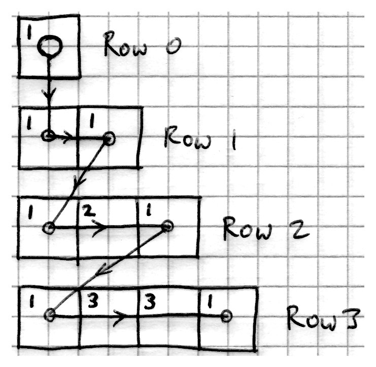
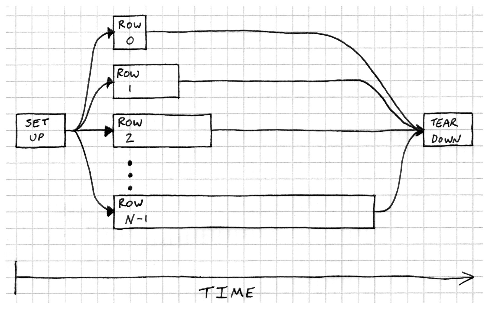

Pascal's Triangle Coding Challenge
by Alastair Harrison
In May 2020, I set a mini C++ coding challenge for friends and colleagues where the task was to write a simple program to generate Pascal's Triangle. The idea was that we'd have a bit of a chat about the different design decisions people made and see which approach was 'best'.
That's not quite what happened though. I received a good number of submissions and immediately set about writing benchmarks. It turned out that some solutions were hundreds of times faster than others.
I came up with hypotheses about what was happening, only to have those hypotheses torn to shreds when I tried to prove them. I asked experts for help. They casually suggested avenues of investigation that ended up taking weeks of effort to chase down, but yielded some fascinating insights along the way.
At one point in the journey, I noticed something deeply unsettling about my benchmarks: I'd deleted one line from a program because it wasn't necessary and the benchmark suddenly took twice as long to run. How can a program get so much slower when it's doing less work?! And what use is a benchmark if it isn't robust to apparently innocuous changes in the code?
What you'll find here are the surprising and interesting results of my absurd struggle to get to the bottom of what was going on. Along the way we'll encounter all sorts of useful tools for peering inside the inner workings of a C++ program.
We'll talk about algorithms, memory allocation, cache friendliness, multi-threading, testing strategies, stealing and downright cheating. And some other stuff, too.
Thanks to everyone who submitted a solution or a review! And thanks to Arnaud Desitter, Geoff Hester and Kirsty McNaught for their patience and excellent advice.
You can see the original problem statement in Appendix I - Original Problem Statement.
Submissions received
This is a list of all of the submissions I received for the coding challenge. The links will take you to the source code as well as any reviews that were received for the submission.
Submissions that have the suffix _arh are ones that I created in order to
demonstrate interesting things.
I don't suggest that you dive in to these links immediately. The text will guide you through the most important features.
Baseline solution
Loops make the world go round (and round...)
- AskingCrow
- BumbleBeetle
- CluelessWolverine
- CluelessWolverine2
- Fortran4Ever
- simple_basic_solution
- user_usery
- FlyingDesitter_arh
Everything is a matrix
STL algorithms have awful names
Threads to the rescue!
- Pixelf
- Pixelf_TBB_arh
- Pixelf_TBB_scalable_alloc_arh
- Pixelf_TBB_spans_arh
- Pixelf_TBB_boost_arh
- Pixelf_TBB_monotonic_alloc_arh
- Pixelf_TBB_single_array_arh
All your tests are terrible
Laziness is the first step towards efficiency
How to kill your compile times
Have your constexpr cake and eat it
Loops make the world go round (and round...)
We're going to start the journey by looking at some of the obvious and easily fixed gotchas that silently drag down the performance of our programs.
Loops are the bread and butter of daily programming. As you'd expect, most submissions for the Pascal's Triangle challenge were implemented in terms of a pair of nested loops. The outer loop iterates over the rows of the triangle, and the inner loop generates the elements in each row.
The reviewers almost universally found these solutions to be readable and maintainable, and guessed that they would all perform equally. Despite that, many of the 'raw loop' based submissions contained some rough edges that made them run quite a bit slower than necessary.
We're not just talking a few percent, either. The best performing of the bunch is around 7 times faster than the worst performing one, despite their very similar code. The other loop-based solutions show a spread of performance between those two extremes.
By applying the lessons learned from studying the submissions, we'll make a version which is an impressive 20 times faster than the worst performing loop-based solution.
Spot the difference
In this section we'll concentrate mainly on two particular submissions:
Let's kick off by looking at their main logic side-by-side:
| AskingCrow | CluelessWolverine2 |
|---|---|
|
|
At first glance they look very similar, but they're actually two extremes of the performance spectrum amongst the loop-based submissions.
To show this, I set up a benchmark measuring the element throughput for each of them. That's a measure of how many elements of pascal's triangle are generated per second, plotted for a range of different triangle sizes. Higher is better!

These benchmarks are plotted on a log-log scale. Small differences in the graphs may correspond to very large actual differences.
The vertical red line is important. It marks the point where integer overflow occurs in the row values, because a 64-bit unsigned integer isn't large enough to hold the correct values. Generating triangles larger than this is pointless, as their contents become complete garbage. Nonetheless I thought it would be fun to drive the algorithms beyond their valid domain, as there are some quite interesting things going on.
For triangles with 64 rows (right on the red line), AskingCrow is generating just over 40 million elements per second. Its competitor, CluelessWolverine2 is banging out a remarkable 316 million elements per second.
Take a look at those two code snippets again. How many things can you see that might explain the difference in speed? When you're ready, click on.
Don't do more work than you need to?
It's usually a good idea to avoid computing things that you don't need to compute. CluelessWolverine2 takes advantage of the fact that the rows of Pascal's triangle are symmetrical. It computes only half of each row by summing pairs of values from the previous row, but writes the value twice; once in the first half of the output row and again in the second half of the row:
Here's the code:
for (uint32_t j = 1; j < (i + 2) / 2; j++) {
// Compute each non-1 entry and assign to both sides of triangle
row[j] = row[i - j] = triangle[i - 1][j - 1] + triangle[i - 1][j];
}
Clever. But is it worth doing?
I created a new solution called Baseline which is essentially CluelessWolverine2 without the half-row optimisation. It's what I'd consider to be the 'canonical' nested-loop solution.
| Baseline | CluelessWolverine2 |
|---|---|
|
|
Here's how they do against each other:
Element throughput

For small triangles, I'd say that's a wash. There's no real benefit to duplicating the values. The extra subtraction to compute the second insertion point has the same cost as just computing the element value directly by summing previous elements.
But when the triangles get bigger, the 'optimisation' actually turns out to be a hindrance! The double-ended memory access patterns aren't so cache-friendly once the triangle ceases to fit inside the L1 cache. We'll be talking more about cache-friendliness shortly, so I won't dwell on it here.
Secretly I was rather pleased that the optimisation was not worth having, because that double-assignment in a single line of code makes me feel quite unwell 🤮.
Later on we'll see an instance where the half-row optimisation definitely does improve performance. But as we've seen here, you can't know until you measure!
Memory allocation matters
One of the slowest things we can do in a computer program is to allocate memory. The default memory allocator has to deal with callers requiring chunks of memory of all different sizes and for wildly varying durations. It needs to be able to reuse returned memory chunks where possible, but avoid too much heap fragmentation. It has no priors on the memory access patterns it will be exposed to, and it must be thread safe. General purpose memory allocators are complex and have to do a lot of book-keeping. That makes them expensive and non-deterministic.
Once you've made sure that your algorithm is not doing anything overtly stupid and that it has appropriate computational complexity, the next most fruitful avenue for achieving performance gains is usually to be found in minimizing memory allocations.
For the moment we will concentrate mainly on the differences between the lowest performing raw-loop solution, AskingCrow and the highest performing raw-loop solution, CluelessWolverine2.
We're going to use three powerful profiling tools to peer in to the inner workings of them both and try to understand the performance disparity.
Tracing allocations with HeapTrack
We'll begin by analysing the memory usage of the two solutions using the excellent HeapTrack tool. I set up each solution to generate 20,000 rows of pascal's triangle and used HeapTrack to trace all of the memory allocations.
Where the Heaptrack plots have multiple colours, each colour corresponds to a different source of allocations. The allocation sources are stacked on top of each other, with the worst offender having the largest surface area and appearing at the bottom of the stack.
Number of allocations
CluelessWolverine2 - Number of allocations (for 20,000 row triangle)
{kind=link}
CluelessWolverine2 makes 20,000
allocations1 -- one for each row. Seems reasonable, given that every row
has a std::vector of its own. The graph is all one colour, indicating a single
source of allocations.
AskingCrow - Number of allocations (for 20,000 row triangle)
I couldn't show HeapTrack's tooltips in the screenshot, so I've added my own high-quality labelling to show the sources of the allocations.
{kind=link}
AskingCrow makes over 300,000 allocations.
That can't be healthy! Interestingly, the largest source of allocations by far
appears to be the call to push_back on the new_row vector.
Instantaneous amount of RAM allocated
What about the amount of memory allocated?
CluelessWolverine2 - Instantaneous amount consumed (for 20,000 row triangle)
{kind=link}
AskingCrow - Instantaneous amount consumed (for 20,000 row triangle)

Both solutions have the same peak memory consumption of 1.6Gb, but that doesn't tell the whole story. It's instructive look at the cumulative amount allocated.
Cumulative amount of RAM allocated
CluelessWolverine2 - Cumulative amount allocated (for 20,000 row triangle)
{kind=link}
AskingCrow - Cumulative amount allocated (for 20,000 row triangle)

CluelessWolverine2 allocates a total of 1.6Gb, then gives it all back at the end. But AskingCrow allocates a cumulative total of 8.0Gb! Most of that churn comes from memory allocated and deallocated during the course of generating each row of the triangle.
Click on to the next section, where we will use the uftrace tool to get
another view of the situation.
OK, the executable actually makes more allocations than that, because of the command-line parser, Lyra. Let's agree to pretend those don't exist, hmm?
Tracing function calls with uftrace
So we know that AskingCrow is allocating more
memory than CluelessWolverine2. Using
another nifty tool called uftrace, we can
look inside the generate_rows function and get a much clearer idea of exactly
where it's spending its time.
You can use uftrace on any binary that has been built using the -pg gcc
compiler flag. The flag inserts instrumentation into the binary that can trace
every single function call. uftrace uses the instrumentation to dump
a record of every function call into a log file for later analysis.
This sort of tracing has an impact on performance, so you should not take the timings literally. It's also not able to trace functions that have been inlined by the compiler1. The main aim here is to get a feel for how much work the two solutions are doing.
Profiling function calls in the generate_rows function
I built a different executable for each solution, and recorded a uftrace
profile for both of them as they generated a 20,000 row triangle:
uftrace record ./profile_AskingCrow -s 20000
The uftrace recording for CluelessWolverine2
was a modest 1.9Mb. AskingCrow generated a 6.0Gb
monster-trace 🤢. I think that means it made a few more function calls.
Once I had the recordings, I used the uftrace graph command to print the call
summaries. A lot of the function calls have been inlined by the compiler, so
what we're left with is mostly just the calls to memory management functions.
| Slowest - AskingCrow | Fastest - CluelessWolverine2 |
|---|---|
|
|
AskingCrow is making a massive number of function
calls. A 20,000 row instance of Pascal's triangle has 200,010,000
elements in it, so it's not surprising to see std::vector::emplace_back being
called that many times. But there's also a huge number of calls to std::vector::_M_realloc_insert,
which is part of the container's automatic resizing mechanism. Each one of those
calls is in turn calling new, memmove and delete. On top of that, every one
of the 20,000 rows seems to be getting two each of new, memmove and delete.
Meanwhile, the svelte and shiny CluelessWolverine2
is getting away with just one call to new for every row. We're not seeing
any calls to delete because the rows don't get deleted until the caller
of generate_rows has finished using them. That's not unique to
CluelessWolverine2; it's just easier to
see because there are fewer other calls.
Now that we know what the bottlenecks are, we can take a look at the code to explain the behaviour.
Identifying the rough edges
Here are the relevant parts of the two solutions side-by-side. I've removed lines which aren't related to memory allocation.
| Slowest - AskingCrow | Fastest - CluelessWolverine2 |
|---|---|
|
|
You can see how CluelessWolverine2 is
careful to take every opportunity to avoid unnecessary memory allocation.
Whenever it constructs a std::vector, it always either initializes the vector
with the correct number of elements:
// Create row, pre-sized, all 1s.
std::vector<uint64_t> row(
i + 1, // <-- Number of elements
1 // <-- Initial value of elements
);
or reserves space for yet-to-be created elements:
std::vector<std::vector<uint64_t>> triangle;
triangle.reserve(num_rows);
In contrast, AskingCrow begins by constructing empty vectors:
std::vector<std::vector<uint64_t>> rows;
std::vector<uint64_t> previous_row;
Then it simply relies on push_back to grow the vector when necessary. That's a
problem because whenever the vector outgrows its storage it needs to reallocate
a new and larger chunk of memory, copy2 all of the elements from the old
chunk into the new chunk and then deallocate the old chunk. But it's worse than
that. When you get a new chunk of memory from the allocator, it may not
be in the cache, so any access will pay the cost of a trip out to main memory.
For small Pascal's triangles, the cost of this memory management greatly
outweighs the cost of actually computing the values to go in the rows.
At the end of its main-loop body, CluelessWolverine2
takes the current row and uses std::move to transfer it cheaply into the outer
vector. Effectively it rips out the guts of the local row variable and hands
them to the outer vector to use:
triangle.push_back(std::move(row));
AskingCrow copies the current row into the outer
vector (requiring an allocation and a memcpy) and then makes a second copy
of it into the previous_row object (which may also allocate before the memcpy).
rows.push_back(new_row); // Always allocates
previous_row = new_row; // May allocate if 'previous_row' needs resizing
In the next section we're going to look a little more at the cost of these extra allocations, using the Tracy frame profiler.
Inlining is where the compiler takes the body of a function and dumps the whole contents of it into the calling function. This avoids a function call, but more importantly it allows the optimizer to see right in to the called function and potentially generate much faster code.
Integer elements of a vector are always copied, because moving doesn't make sense for trivially copyable types.
Visualising the cost of memory allocation with the Tracy Frame Profiler
We've seen that AskingCrow is doing a lot more allocation than CluelessWolverine2, but what does it actually cost?
uftrace was trivial to use and logged every function call. But it caused
a substantial slowdown of the program, and didn't allow the profiling to be
targeted where it was most needed. That's where the
Tracy frame profiler comes in.
Tracy works quite differently from how a sampling-based profiler (think Linux
perf, Intel's
VTune
or Apple's Instruments)
would work. They usually only gather coarse statistics that tell you the
percentage of total time spent in each function.
Instead Tracy allows us to mark up exactly the code we want to profile (using simple macros), and captures logs every time that section of code is executed. As before, the act of profiling will affect the timings, but Tracy is remarkably low overhead and offers nanosecond resolution results. Oh, and the visualisations it offers are downright snazzy.
We're going to benchmark just the time taken for the insertion of rows into the outer vector, for a triangle with 20,000 rows.
AskingCrow
AskingCrow constructs the outer vector without reserving space and pushes new rows into it. When new rows are pushed, the outer vector may need to be resized. Furthermore, each row is copied in to the outer vector, which will always incur an allocation and a copy of all of the row elements:
std::vector<std::vector<uint64_t>> rows;
...
while (rows.size() < num_rows)
std::vector<uint64_t> new_row;
...
rows.push_back(new_row); // <-- Mean 32.97us per call, for a total
// of ~660ms over 20,000 calls.
// Note that 'new_row' is always copied here, which
// incurs another allocation.
}
CluelessWolverine2
CluelessWolverine2 reserves space in the outer vector and then moves the newly computed rows into it:
std::vector<std::vector<uint64_t>> triangle;
triangle.reserve(num_rows); // <-- 9.18us, once
for (uint32_t i = 0; i < num_rows; i++) {
...
triangle.push_back(std::move(row)); // <-- Mean 47ns per call, for a total
// of ~950us over 20,000 calls.
}
Over the course of constructing the whole triangle, AskingCrow is spending 660ms pushing rows into the outer vector, but CluelessWolverine2 is spending only 950us doing the same thing. That's around 700 times faster. Since running AskingCrow under the Tracy profiler takes a total of 1010ms, that 660ms for row allocations represents a massive portion of the total run-time.
The geometric allocation behaviour of std::vector
One of the reasons that AskingCrow is doing a lot of memory allocation is due
to the way that std::vector works. If you don't pre-reserve space in a
std::vector then it has no option but to just grow on demand. The precise
details are implementation defined, but most implementations use a scheme where
they multiply the capacity of the vector by a fixed factor whenever it needs to
grow. That's the most efficient thing you can do if you have no prior
knowledge about how many elements are going to be pushed in.
We can use Tracy to visualise the geometric nature of the allocations as AskingCrow populates a triangle rows containing 20,000 elements. I think it's super cool to see.
I've annotated the solution's source code to label the various stages of the
algorithm with names like Fill new row and Push back new row. You'll see
those labels in the Tracy viewer. The labelled bars at the top represent the
amount of time spent in each zone. Selecting a zone (as I have done for Fill new row) shows zone-specific allocation information in the bottom half of the
screen.
There's a huge amount of information contained in this screenshot, so I've highlighted the key parts.
std::vector growth in AskingCrow

-
First thing to notice is that there are 16 allocations and 15 deallocations happening while the 20,000 row elements are computed. Those are due to the row vector automatically growing itself occasionally, and could all be avoided by correctly sizing the vector up-front.
-
The table in the bottom half of the screen shows how the amount of memory allocated by the
std::vectordoubles at every stage - starting with 8 bytes (enough to hold a singleuint64_tvalue) and ending with 256 Kilobytes (enough to hold 32,768uint64_tvalues). -
The yellow memory usage graph neatly shows the geometric nature of the allocations. You'll notice that it has a saw-tooth pattern to it. That's because whenever the vector grows, the newly allocated buffer has to coexist with the old buffer until all of the values have been copied over. Only then can the old buffer be deallocated.
These memory allocations are relatively quick, because they are for very common sizes -- the allocator can likely pull them straight out of a pool of correctly sized chunks. In fact, inspecting the addresses of the allocated memory in Tracy shows that in most cases the temporary row vectors are allocated exactly the same chunks of memory every time. It's reusing them over and over. That means they're already in the cache, so writing to that memory will be super fast. If the allocator didn't do that, the performance would be grindingly slow.
-
The last thing to notice is the relative size of the bars for the
Fill new rowzone and thePush back new rowzone. Their length denotes the time they took. Just pushing back thenew_rowinto the outerrowsvector takes longer to do than filling the row with values!The likely reason is that the memory allocator will need to find a new chunk of memory for the destination vector, rather than reusing a previously used chunk. Because it's a new piece of memory, there's no chance it will be in the cache already. Copying all the row values into it will always incur an expensive trip out to main memory.
Be kind to your cache
So far I've only let you see benchmarks from two of the raw-loop solutions. Now we'll plot all of them together. Recall that 'throughput' is the number of elements of Pascal's Triangle that are computed every second. The higher the throughput, the better the performance is.
{kind=link}
All of these solutions start to see a catastrophic drop-off when the size of the triangle gets to around 2 Million elements (or ~2048 rows).
Remember that the graph uses a log-scale for the y-axis, so the effect is more pronounced than it appears. Here's the same data plotted with a linear scale for the y-axis:
{kind=link}
L3 Cache on the computer that generated the benchmarks is
sized at 16Mb. How many 64-bit integers can you fit in to 16Mb? Some
back-of-the-envelope calculations tell us that it's
(16*1024*1024)/8 = 2,097,152 elements. Bingo! That's right where the drop-off
occurs for most solutions.
Once the algorithm can no longer keep the whole of Pascal's triangle in the cache, it's having to pay the cost of paging out to the glacially-slow main memory. You can see from the benchmarks that this stuff really matters.
Fortran4Ever allocates twice as much memory as any of the other solutions, so its performance plunge starts sooner.
When we push these algorithms to generate 65,536 rows, the storage requirements shoot up to 16Gb for a single triangle. By then we're definitely in the territory of virtual memory - where data starts spilling out to disk. Frankly it's astonishing that we still get such high throughput.
Later on, we'll talk about some solutions that have significantly lower memory requirements and continue to perform well even as the row count climbs.
When everything looks like a nail, perhaps you need a spanner

All of the loop-based solutions we've seen so far are constrained by the fact
that they have to return their result as a std::vector<std::vector<uint64_t>.
Each of the rows of the triangle lives in its own std::vector, which has two
important implications:
- We need to perform a memory allocation for every row.
- We have no control over where in memory those allocations are made.
In this section we'll explore one approach for fixing both of those problems. There are also viable solutions using custom allocators for STL containers. I did implement some of those, but I didn't feel I could do justice to them in this write-up, so we'll stick to talking about 'view' types.
C++20's std::span
C++20 introduces std::span,
which allows us to create lightweight 'views' onto underlying data. Whereas
std::string_view offers immutable views onto 'char-like' data, std::span
can point at contiguous arrays of any type. In addition, the underlying data
can optionally be mutated through the view.
Essentially std::span is just a class template which contains a pair of pointers to the
beginning and end of a contiguous chunk of data that it does not own. The reason
std::span is interesting is that it has methods like begin, end, size
and operator[], which allow std::span to be used as if it were any other STL
container. The only difference is that you cannot insert or delete elements.
But you can mutate them.
We don't have access to std::span in C++17, but the
Range-v3 library contains
ranges::span which does a very similar job, so we'll use that instead.
Changing the return type of generate_rows
A key insight is that the original challenge did not require generate_rows to return
a nested std::vector<std::vector<uint64_t>> data structure. It only required
it to return a type which behaves similarly. ranges::span<uint64_t> has all
the necessary methods for iterating over values, so we can change the return
type of the generate_rows function to be std::vector<ranges::span<uint64_t>>
and the unit tests will still compile.
This frees us from the requirement to allocate a separate array of uint64_t
elements for every row of pascal's triangle. Instead we can allocate a single
array of rows * (rows+1) / 2 elements up front, which can accommodate the
whole triangle. Then we just create a lightweight span object for every row,
which points in to the appropriate part of the large array.
There's the added benefit of cache-friendliness here. When the CPU accesses bytes from RAM, it reads them in chunks that are the same width as a cache-line. On current architectures that would typically be 64-bytes at a time. There's also a hardware 'cache prefetcher' that speculatively retrieves chunks of memory before you need them. That works best when you access memory sequentially.
When our triangle row data was stored in individual std::vector instances,
there would be an almost-guaranteed cache-miss when the the algorithm hit the
beginning of each new row. With an up-front allocation of a single contiguous
block of memory, the prefetcher will always have grabbed the memory we need
when we roll on to the next row. That's neat.
Ownership obstacles
The problem with span objects is that they do not own the data they point to.
If you point a span at some piece of memory and then the owner of that memory
goes out of scope then you'll be left with a 'dangling' span. That's nothing
new -- C++ has had the problem of dangling pointers and references right from
the earliest days. But it is something we need to be very careful of when using
'view' objects such as std::span and std::string_view.
We need to somehow bundle the ownership of the triangle data in to the result
type returned by the generate_rows function, but still retain its compatibility
with the unit tests. Here's how we can do that:
class PascalsTriangle {
std::unique_ptr<uint64_t[]> values_; // Underlying data
std::vector<ranges::span<uint64_t>> rows_; // Vector of lightweight row views
public:
PascalsTriangle(uint32_t num_rows); // Constructor fills rows_ with data
// Providing begin() and end() allows the PascalsTriangle type
// to be iterated over.
auto begin() const { return rows_.cbegin(); }
auto end() const { return rows_.cend(); }
};
inline auto generate_rows(uint32_t num_rows) -> PascalsTriangle {
return PascalsTriangle(num_rows);
}
The PascalsTriangle class owns the underlying triangle data in the form of the
values_ array. This could be implemented as a std::vector, but I chose to use a
unique_ptr because it avoids the up-front cost of value-initialisation that
std::vector imposes. But that's a story
for another day.
The sneaky part is that PascalsTriangle has begin() and end() methods that
return iterators into the rows_ vector. That makes the PascalsTriangle type
look sufficiently 'container-like' that it will satisfy the interface requirements
of the unit tests. You can even use range-for loops on it:
PascalsTriangle const triangle = generate_rows(42);
for (auto const& row: triangle) {
...
}
Look! It's more fasterer!
Once the return-type is designed, the rest of the implementation is very similar to all of the other raw-loop solutions. You can see it at FlyingDesitter_arh. I'd like to thank Arnaud Desitter for reminding me to benchmark this.
Now, no matter the size of the triangle, we only ever make two allocations in total. It makes a big difference.
Recall that in the Don't do more work than you need to? section we cooked up a solution called Baseline which was what I consider to be the 'canonical' raw-loop approach to generating Pascal's Triangle. For 64-row triangles, FlyingDesitter_arh is 10 times faster than Baseline. Tasty.
Element throughput (log scale)
{kind=link}
Element throughput (linear scale)

OK, so we're done here? We can all go home?
Not really. This solution may be super-fast, but it has some pretty anti-social storage requirements. The amount of memory it uses is quadratic in the number of rows. And it still suffers from a catastrophic tumble when the triangle spills out of L3 cache. I think we'll grade this one 'B+ (could do better)'.
Loopy learnings
Tools
We looked at all of the raw-loop based submissions to the Pascal's Triangle coding problem. The following open-source tools were helpful for understanding their performance characteristics:
- Heaptrack for locating sources of memory allocation.
- uftrace for understanding the function call graph.
- Tracy for getting highly targeted profiling information for particular zones of the program.
I've ordered the tools by how involved they were to deploy. Heaptrack was trivial to use direct from the command-line, with no modifications required to the binary under test. It's really a no-brainer (but is Linux only).
'uftrace' needed the code to be built using a specific compiler flag, but after that was as easy to use as heaptrack.
Tracy was the most powerful tool, but required linking the binary against a client library and instrumenting the code to be profiled. But the insights it can provide are frankly jaw-dropping.
Techniques
Some things we learned in this section to make loop-based algorithms go faster:
Profiling
- Always measure the effect of your optimizations. Sometimes things don't help as much as you'd hoped.
Memory allocation
- Avoid memory allocation inside loops
- If you know how big your vector will grow then use
.reserve()up-front. - Don't allocate more memory than you need.
Avoid unnecessary copies
- Move vectors rather than copy them, if you can.
- Try not to insert or remove elements anywhere other than the right-hand end of a vector.
Cache friendliness
- Arrange for your algorithm to access memory sequentially, so that the prefetcher can cache the memory you need before you ask for it.
- Aim to make your data structures fit in the cache
- Corollary: avoid bloating your objects with lots of member variables. The smaller they are, the more you'll fit in cache.
1 Image from https://pixabay.com/photos/rollercoaster-looping-amusement-801833/, used under 'Simplified Pixabay License'.
Everything is a matrix
Section not complete
I received one beautiful submission written in Fortran. Fortran treats everything as a matrix, so Pascal's Triangle becomes a square lower-triangular matrix. The submission link includes comments from the author, which give a fascinating insight into how the constraints imposed by a programming language can shape the way that you have to think about a problem.
I'm afraid I didn't benchmark this one. Let's assume it was astonishingly fast.
Submissions in this category
STL Algorithms
Section not complete
Two intrepid Programmers decided to use algorithms from the C++ standard library, rather than hand-rolling loops.
Reviewers of the loop-based solutions universally reported that they were readable and maintainable. So why is it that luminaries of the Modern C++ community are continually pushing for us to use STL algorithms?
Why use the STL?
Here are some of the well-known talks on the subject. The first, by Sean Parent is an absolute classic:
- GoingNative 2013: Sean Parent "C++ Seasoning"
- 105 STL Algorithms in Less Than an Hour
- CppCon 2019: Conor Hoekstra “Algorithm Intuition (part 1 of 2)”
The main thrust of the argument is that using the STL algorithms raises the level of abstraction of our code. It shields us from a number of very common bugs in raw loops, such as off-by-one errors, incorrect handling of the empty case and forgetting to increment counters.
Small raw loops can be very readable, but their readability does not scale well.
The longer the loop, the more effort it takes to reason about its effects. In
contrast, when we see a piece of code using std::transform, we know
immediately that the input collection will not be modified by the operation and
that every element of the output collection must be obtained by applying the
same operation to each of the input elements.
Programmers who are familiar with their STL algorithms can instantly gain important knowledge about code that uses them, without having to spend brain cycles on deciphering the contents of an ad-hoc loop. As Jonathan Boccara puts it, we should "Level up to the STL algorithms, and not the other way round".
They don't actually help massively here but in more complex situations they can greatly reduce bugs (say this somewhere...)
But they're really ugly!
I drink a glass of STL kool-aid with my breakfast every morning. But when someone
says "STL algorithms are hard to read with all that begin and end iterator
nonsense", I find myself guiltily agreeing1. It's a hard sell.
C++20 really improves the situation by providing 'constrained' versions of all of the STL algorithms. Now instead of having to write:
auto how_many = std::count(v.begin(), v.end(), 42);
you can instead just do2:
auto how_many = ranges::count(v, 42);
Much better. The range versions of the algorithms offer other benefits, like the ability to apply projection functions to the input data before passing it through the algorithm. Exciting times.
If you want this in your pre-C++20 codebase right now then it's actually pretty easy to write a library of simple wrapper functions around the STL algorithms. Or you can use the range-v3 library.
How does the STL help us for generating Pascal's Triangle?
The STL algorithms do not promise to improve the performance of our code. We use them to avoid common bugs and to give a common vocabulary for talking about algorithms. We should not expect any of the STL-based Pascal's Triangle solutions to out-perform the fastest of the raw-loop solutions.
Having said that, there are sometimes free performance optimizations if you use
STL algorithms. As an example, look at the Microsoft STL's std::reverse implementation
which employs substantial amounts of SIMD
trickery to achieve speed-ups. You don't get that in your average raw loop. As
far as I can tell, Clang's libc++ and gcc's libstdc++ standard library
implementations do not do anything similar. But they might in future.
Benchmarks
NOTE: The vertical red line marks the point where integer overflow occurs in the row values. Generating triangles larger than this is pointless. We're only doing it to see how the algorithms scale.
As well as the submissions from this category, the benchmark graphs include the Baseline solution introduced in the loops chapter.
Time to generate a triangle
{kind=link}
Element throughput
{kind=link}

Watch out for back-insertion
talk about concepts rather than the solutions themselves
The author of LordVader chose to use C++17's
newly-introduced std::adjacent_difference
algorithm, which applies a transform to every adjacent pair of elements in a
collection. The name adjacent_difference unfortunately doesn't communicate the
true flexibility of the algorithm. By default it computes the difference
between adjacent pairs of values, but some overloads allow the caller to specify
a custom operation.
LordVader takes advantage of that ability to
replace the default 'difference' operation with std::plus, which has the
effect of summing pairs of elements from the previous row, which is precisely
what we need to do when computing rows of Pascal's Triangle.
LordVader is a really clean solution, and looks like it should perform well. It takes care to minimise memory allocations by reserving space in the vectors and avoids unnecessary copies.
I liked the use of Named Return Value Optimization to put newly constructed rows into the outer vector:
auto generate_next_row(std::vector<uint64_t> const& last_row)
-> std::vector<uint64_t> {
std::vector<uint64_t> new_row;
... fill row values ...
return new_row; // <-- NRVO means new_row gets constructed directly into the
// result object. Not guaranteed (even by C++17), but most
// compilers do it when optimizations are enabled.
}
auto generate_rows(uint32_t num_rows) -> std::vector<std::vector<uint64_t>> {
...
for (uint32_t i = 1; i < num_rows; ++i) {
rows.push_back(generate_next_row(rows[i - 1]));
}
...
}
One reviewer remarked that putting the inner loop in another function would be
inefficient because of copying. Fortunately C++ has our back here. It's able
to write the result from generate_next_row directly into the storage reserved
by the calling function (either the stack or perhaps registers).
std::vector::push_back then takes that temporary vector and moves it
efficiently into the rows vector.
Despite all that care, LordVader for some reason does not perform as well as GroovyZone. In fact, at 1024 rows, it's almost 7 times slower than Baseline. Why is that?
The clue is in the use of std::back_inserter for filling rows with elements:
// Find the pairwise sums of the elements in the last row and add to the new row.
std::adjacent_difference(std::cbegin(last_row), std::cend(last_row),
std::back_inserter(new_row), std::plus<>{});
Every time a value is assigned to a back_insert_iterator,
it calls push_back on the vector. And every time push_back is called, it
needs to check that the vector has adequate capacity to accommodate the new
element. Even though we've reserved enough space up-front, the code still has to
check the condition on every loop iteration. In some cases the optimiser is
able to see that the condition check is unnecessary and compile it away, but
it's certainly not guaranteed3. And it doesn't happen in this case.
To test this hypothesis, I made a modified version of the
LordVader solution, the imaginatively named
LordVader2_arh. Here's the original
generate_next_row function using std::back_inserter:
Lordvader
auto generate_next_row(std::vector const& last_row)
-> std::vector {
std::vector new_row;
new_row.reserve(last_row.size() + 1);
// Find the pairwise sums of the elements in the last row and add to the new row.
std::adjacent_difference(std::cbegin(last_row), std::cend(last_row),
std::back_inserter(new_row), std::plus<>{});
new_row.push_back(1); // Add final 1.
return new_row;
};
In LordVader2_arh, new_row has all of its
elements initialised in the constructor and std::adjacent_difference just
dumps its results straight in to the vector, without using a back_inserter:
LordVader2_arh
auto generate_next_row(std::vector const& last_row)
-> std::vector {
std::vector new_row(last_row.size() + 1);
// Find the pairwise sums of the elements in the last row and add to the new row.
std::adjacent_difference(std::cbegin(last_row), std::cend(last_row),
std::begin(new_row), std::plus<>{});
new_row.back() = 1; // Add final 1
return new_row;
};
Here are the new benchmarks:
Time to generate a triangle
{kind=link}
Element throughput
{kind=link}

LordVader2_arh's performance is now right up there with Baseline and GroovyZone. Hurrah!
maybe the overall order needs tweaking once bits have moved around...
Groovyzone
The author of GroovyZone could not find an existing
STL algorithm that did quite what they wanted, so they chose to implement their
own adjacent_pair algorithm. This was excellent.
By pulling that algorithm out into a named function, it has been made reusable and (vitally) separately testable. Rather than having to indirectly test the loop through the lens of a Pascal's triangle implementation, it can be tested as an algorithm that applies a transformation to adjacent pairs of a collection. Then it can be used in the Pascal's Triangle code with high confidence that it is correct. To quote a well-known roboticist: "This is Huge!".
GroovyZone is careful to allocate all its memory up-front and avoids needlessly copying any rows. When looking at the benchmark results it's no surprise that it almost exactly matches the performance of the Baseline solution introduced in the loop-based solutions section.
What's in a name?
I don't know about you, but I find using a function called adjacent_difference
to compute sums of adjacent elements... perverse. Code using
adjacent_difference to compute something other than differences, is going to
suffer in readability. In my opinion it's a poorly named function and should
probably have been called something like transform_adjacent_pairs. I would
have no qualms about implementing my own transform_adjacent_pairs algorithm
and using it in preference to adjacent_difference.
TL;DR
- Using STL algorithms effectively can help us to write fewer bugs.
- Use of well-named algorithms conveys important semantic information to readers of our code and helps them reason about what it is doing.
- Remember that
vector::push_backhas to do capacity checks, which could fill your hot path with conditionals. For trivial types it might be cheaper to initialise all of the elements up-front and then overwrite with new values, thus avoidingpush_back. But profile before making this decision.
Further references
- Scott Meyers, Effective STL is fairly old now, but gives an excellent grounding in how to think and program using the STL algorithms.
Submissions in this category
Created by arh
- LordVader2_arh An improved version of LordVader
May the great Stepanov forgive my blasphemy.
OK yes, I did cheat a bit. You'd need to use namespace ranges = std::ranges;
to make this code compile.
My suspicion is that the requirement to check the vector size before every element insertion is actually inhibiting some SIMD optimisations that would otherwise happen. Looking at the generated assembly code appears to support this hypothesis.
Threads to the rescue!
Section not complete
Submissions in this category
Created by arh
Discussion
Whenever an algorithm isn't performing well, someone usually comes along and suggests multi-threading as a solution. They should be met with a hard stare and challenged to provide evidence that there are no further gains to be had from improving the existing single-threaded solution. If you multi-thread a poorly implemented algorithm then you're magnifying the impact of that poor design and wasting limited resources.
On an 8 core machine, the best case speed-up from multi-threading an algorithm is 8x. We've seen in other sections of this writeup that careful changes to a single-threaded algorithm can yield orders of magnitude improvements. In case it's not obvious, 'orders of magnitude' is usually a bigger number than 8.
But writing multi-threaded code makes you look cool. So there's that.
Benchmarks
show one plot (probs log throughput with annotation), then the "Embarrassing" section
NOTE: The vertical red line marks the point where integer overflow occurs in the row values. Generating triangles larger than this is pointless. We're only doing it to see how the algorithms scale.
The vertical blue line marks the point where the triangle has 5000 rows.
Time to generate a triangle
{kind=link}
Element throughput
{kind=link}
{kind=link}
How embarrassing
Computing Pascal's Triangle is what's known as an 'embarrassingly parallel' problem. It requires absolutely no effort to separate it into parallel tasks - all of the rows can be computed completely independently. That's what Pixelf does. It computes each row on a different thread. On paper this ought to result in an immediate 8x speed-up and congratulatory back-slaps all round.
You've probably already noticed from the benchmarks that the performance isn't great. In fact, Pixelf is hands-down the worst-performing solution that was submitted. All the way up to 64 rows, Pixelf is consistently about 120 times slower than the baseline nested-loops solution. It's only when you get up to around 12,000 rows (~72M elements) that Pixelf finally begins to pull slightly ahead.
How can this happen when we're spreading the work over multiple cores and there is no shared state or locks to hold us up?
It turns out that there are many reasons. Let's dive into some of them...
Making a stink about std::async
Section not complete
What does std::async do for us?
Pixelf uses std::async to launch its worker threads.
According to cppreference:
The function template
asyncruns the functionfasynchronously (potentially in a separate thread which may be part of a thread pool) and returns astd::futurethat will eventually hold the result of that function call.
The wording here is interesting. "potentially in a separate thread" and "may be part of a thread pool" should raise some eyebrows.
So we've got some expensive piece of work that needs doing. We wrap
it in a function object (could simply be a lambda) which we pass to std::async:
auto some_expensive_computation = [](Arg1 a1, Arg2 a2) -> int {
... costly things ...
}
std::future<int> result =
std::async(some_expensive_computation, arg1, arg2);
...
// Some time later
std::cout << "The result was: " << result.get() << '\n';
In return we get handed a std::future object which has a get() method on it.
If we call get() it will block until the result of our computation is ready.
In theory we can call std::async and have it run our function on some other
thread, while we get on with doing other work. Once we get to a point where we
absolutely cannot proceed without the result of the function, we call get and
hopefully don't have to wait too long for the result. If the result is already
available then get() will return immediately.
std::async has two different 'launch' policies. When you call it, you can
request the std::launch::async policy which causes the function to be invoked
on a different thread, or you can request std::launch::deferred which causes
the function to be invoked on your own thread, but only when you call get().
If you don't specify a launch policy at all, then std::async gets to choose
for you. Exciting!
Pixelf does not specify a launch policy, opting instead to leave the performance choices up to the compiler vendor. Under Clang 10, the default policy appears to always launch a new thread. I've seen no evidence of a thread pool.
Always launch a new thread, you say?
Here's the code that launches the row-filling tasks:
std::vector<std::future<void>> futures;
for (uint32_t i = 0; i < n_rows; ++i) {
futures.emplace_back(std::async(FillRowN, std::ref(rows[i]), i + 1));
}
If we ask for a Pascal's Triangle with 12 rows, this loop will launch 12 new threads,
make 12 allocations to hold function results and construct 12 mutexes, 12
condition variables and 12 std::future objects.
If we ask for a Pascal's Triangle with 65,000 rows, this loop will launch 65,000 new
threads, make 65,000 allocations to hold function results and construct 65,000
mutexes, 65,000 condition variables and 65,000 std::future objects.
I think that's a slightly-too-large hammer to be applying here.
OK fine. That's a lot of threads. So what?
Let's fire up the frame profiler and take a look at what's going on when Pixelf generates a triangle with 5000 rows (~12.5M elements). We're going to be looking at times as reported by Tracy. For Pixelf, using Tracy has just under a 2x speed penalty. These times won't correspond directly to what we see in the benchmarks.
{kind=link}
This is just the first 500us or so of the program's execution. The x-axis
represents time. Every horizontal lane (labelled with numbers like 668661905)
represents a different thread. There are just under 5000 more of these spilling
off the bottom of the display; one for every thread that got launched. The top
lane is the main thread. The filled purple boxes represent zones in the
code that I have explicitly instrumented. You can see the main thread repeatedly
entering the 'Launch Job' zone, which corresponds to where Pixelf
calls std::async.
Each of the 5000 threads has a zone labelled "FillRowN", which is where the thread does the work of filling the Nth row of the triangle. But you can't see the labels without zooming in a long way. At this stage in the execution, those jobs are taking less than 500ns.
The glaringly obvious fact here is that none of those job tasks on the other
threads are actually running simultaneously. The reality is that std::async
is taking an average of 40us to launch each job and return to its caller, and
then the job itself (computing a handful of pascal's triangle elements) is
taking just 500ns. Far from getting a benefit through threading, we're paying a
surcharge of 39.5us per row for the coolness factor. The CPU cores are starved
of work because std::async simply can't launch threads fast enough.
OK, that's what happens when the rows are very small. What about the rows at the bottom end of the triangle? The ones with thousands of elements.
{kind=link}
That's a bit better. For one glorious instant, there are 9 threads working
simultaneously. But throughput is still limited by the rate at which std::async
can launch new threads.
Overall for a 5000 row triangle, the main thread takes a mean of 40us to launch a job, and the jobs last for a mean of 56us. As a result, for much of the time the CPU cores are sitting idle and work rarely happens in parallel.
And there's more!
Now let's point the frame profiler at the final loop - the one that waits for all of the futures to complete:
for (auto& f : futures) {
f.get();
}
You'd think that get() ought to return immediately for all but the last few
threads. But that's not all that's happening here. In fact, when you call get()
on a future, not only does it have to lock and unlock a mutex (~37ns), it also
takes the opportunity to deallocate the shared state that is used to communicate
the result from the task. That brings the time for every non-blocking call to get()
up to ~220ns. Multiply that by 5000 and you've got just over a millisecond.
{kind=link}
You can see the deallocation happening if you look at the yellow memory-usage graph during the "Waiting for job completion" zone. Once all the jobs have finished, Pixelf still takes another 1ms just to wait for all the threads and destroy the shared state. Admittedly that's only a small part of the 133ms overall time (as measured in Tracy). (this last sentence ends the page a bit abruptly)
When stealing is a virtue
Section not complete
Can we do better?
It should be clear by now that std::async is not the correct tool for this
job. It's much better suited to one-off long-running concurrent tasks, rather
than executing a series of repeated tasks. One reviewer suggested
"Could use a work-stealing setup with an atomic int for threads to grab the next available row, and signal when there's no more work."
That's a very insightful comment, but it does gloss over a fearsome amount of detail.
A 'work-stealing queue' is a scheduling technique where a pool of worker threads each have their own job queue, with a scheduler to distribute work between the queues. Typically the queues are implemented as lock-free data structures, to avoid the performance horrors associated with waiting on mutexes. If a worker thread runs out of tasks on its own queue, it's allowed to poll the queues of other workers and 'steal' work from them. That ensures you don't have threads sitting around idle while others are still working.
Writing a good lock-free queue implementation is extremely difficult. Debugging it is even harder. Fortunately there are some high quality implementations of these concepts freely available from trusted vendors. None of them were within the rules of this coding challenge, but I want to give a glimpse of what's possible with a good concurrency library. In particular, let's experiment a little with Intel's Threading Building Blocks (TBB).
Before we go on, I want to reiterate the point that trying to optimise the Pascal's Triangle algorithm is a Bad Idea. Using threads to optimise it is a Really Bad Idea. For any reasonable row count (i.e. smaller than 64 rows which is the size where integer overflow happens), the cost of launching a thread is always going to be greater than just getting on and computing the values on the current thread. We're only doing this because it's fun and instructive to see the effects of different design decisions.
Using tbb::parallel_for to make the CPU work harder (Pixelf_TBB_arh)
TBB supports a
number of different threading models. One of the highest-level abstractions it
offers is the parallel_for command. You pass it a function object and an input
range and it will do the hard work of dividing the work up into batches and
dispatching it to a thread pool via work-stealing queues.
Pixelf's FillRowsInParallel function becomes FillRowBlock:
void FillRowBlock(vector<vector<uint64_t>>& rows,
const tbb::blocked_range<uint32_t>& r) {
for (auto i = r.begin(); i < r.end(); ++i) {
FillRowN(rows[i], i + 1);
}
}
The blocked_range type gets passed in by TBB with a list of row indices.
FillRowBlock simply iterates through them all and generates the values.
In the outer generate_rows function, we launch the tasks with a call to
parallel_for:
tbb::parallel_for(tbb::blocked_range<uint32_t>(0, num_rows),
[&rows](auto& r) { FillRowBlock(rows, r); });
The first argument here specifies a range containing all of the rows that need filling, and the lambda function needs to accept subsets of that range.
That's literally it. TBB handles setting up of the task scheduler and thread pool automatically.
You can find the full source on the Pixelf_TBB_arh page.
How does it do?
Time to generate a triangle
{kind=link}
Element throughput
{kind=link}
{kind=link}
OK, so performance isn't stellar against the single-threaded baseline solution, but at least we've beaten the pants off Pixelf.
What about CPU usage? Let's fire up the frame profiler again:

Now we're talking! There are exactly 16 threads: one for each logical core1. Each of which is fully occupied with jobs. Even the main thread which launched the tasks is executing jobs!
That's the power of a good threading library.
During benchmarking I disabled hyper-threading, so only the 8 physical cores were available. But when I took the Tracy screenshot, hyper-threading was enabled, so 16 logical cores were available.
Using custom memory allocators
Section not complete
Let's drill down still further and add some instrumentation within the
FillRowN function in Pixelf_TBB_arh. Specifically let's look at how much time is spent resizing
the row vector versus how much time is spent computing elements.
{kind=link}
Every thread lane has three rows of zones in it now. ResizeRow and
ComputeElements are child zones of FillRowN, which is itself a child zone of
FillRowBlock.
The most startling thing here is that FillRowN spends more than half its time
resizing row vectors. Almost all of that time is going to be spent waiting for
memory allocation. We thought we'd achieved excellent CPU usage, but in fact
the threads are spending most of their time twiddling their thumbs, waiting on
memory. That's disastrous for performance.
On average, ResizeRow is taking 41us and ComputeElements is taking 17us.
Assuming that multi-threading is only helpful for the computation of
elements, then only 29% of our workload will benefit.
Amdahl's Law tells us
that the theoretical maximum speedup is therefore only ~1.4x, even with 16
threads.
Unless we can get rid of that memory allocation bottleneck a threaded solution is always going to be hamstrung.
Does a faster memory allocator help?
One of the problems with having 16 threads all hungrily asking for memory is that the poor old memory allocator is getting hammered. Luckily for us, the ever-thoughtful developers of TBB have thought of this, and provided some more thread-friendly memory allocators.
In Pixelf_TBB_scalable_alloc_arh
I've switched out the row vectors' default memory allocator and replaced it with
the tbb::scalable_allocator.
Using it does not do anything at all for the mean row-resize time. But it does
tighten up the distribution, knocking 18us off the mode. You can see the
difference in the latency histograms:
WARNING: The x-axes have different scales! lose these graphs??
Pixelf_TBB_arh row resize latency

Pixelf_TBB_scalable_alloc_arh row resize latency

Benchmarks
What about the benchmarks? Using the different allocator does make a modest improvement, but it won't blow your socks off.
| Solution | Time to generate a 5000 row triangle |
|---|---|
| Baseline | 32.3ms |
| Pixelf | 65.9ms |
| Pixelf_TBB_arh | 18.6ms |
| Pixelf_TBB_scalable_alloc_arh | 11.3ms |
Time to generate a triangle
{kind=link}
Element throughput


Compared to the Baseline single-threaded solution, using all of the machine's threads does to some extent stave-off the dramatic performance drop-off that comes when Pascal's Triangle no-longer fits in the L3 cache. But I'd argue it's really not worth the extra resource usage.
Use Moar Cores!
Section not complete
I know what you're thinking. You're thinking: "8 cores is puny! Find a bigger computer!"
Oh? You weren't thinking that? Well I was. Each to their own.
So anyway, I found a computer under colleague Luis' desk which has 32 physical cores in it. I wrote a benchmark to see how the element throughput of the TBB solutions changes as the number of threads available to the thread-pool is increased from 1 to 32. In an ideal world, performance would scale directly with the number of cores doing work.
Throughput scaling with number of threads (32-core machine)

The black line shows the 'ideal' speedup that we should achieve if doubling the number of threads would halve the time taken to compute the elements of Pascal's Triangle.
Upsettingly the reality is nowhere near as good as that. Poor old Pixelf_TBB_arh is struggling to hit even a 7.5x speedup, even if we throw the full 32 cores at it. Looking at the way the graph is levelling out, it looks like even if we could bring 2048 cores to bear at the problem, we'd still not do better than an 8x speedup.
Pixelf_TBB_scalable_alloc_arh does a little better, but has pretty much given up once it's hit a 12x speedup.
There's a law for that
Consider an idealised model of the situation we've got. Every time we compute Pascal's triangle there are three distinct phases. First we have a bit of setup cost (initialising the thread pool and launching tasks), then we have the row tasks that can all run in parallel, and finally we have a teardown phase (deallocating memory, destroying threads etc...)

Assume T1 is the total amount that work that needs doing. It's equal to the time taken to compute the whole triangle on a single core. Here it would be:
need white backgrounds for this to work on dark mode

Then T∞ is the time taken if we had an infinite number of cores available. This is also known as the 'span' because it's equal to the length of the critical path through the task graph. In our case,
Given those two quantities, the speedup we can obtain through multi-threading is then bounded above by:

For instance, if we had 100 units of work to do, and the critical path (span) was 5 units of work, then the maximum speedup we could achieve would be 20x.
Another way of stating this is through Amdahl's law:

Here f is the potion of the job which can be parallelised and p is the number of cores to use. There's a lovely plot showing how an algorithm scales with CPUs for various parallel portions on the Wikipedia Page on Amdahl's Law1:

The take-home point is this:
Even if you manage to get as much as 95% of your algorithm to be executed in parallel, the maximum speedup you can ever achieve by increasing the number of processors is 20x.
Improving the scaling of the TBB solutions
Judging from the thread scaling benchmark results we saw, Pixelf_TBB_arh's 7.5x maximum speedup corresponds to a parallelised portion of ~87%. Pixelf_TBB_scalable_alloc_arh saw an upper bound of ~12x, which corresponds to ~92% of the algorithm running in parallel.
The obvious thing to do is to look at ways of reducing the portion of the algorithm that must run in serial. We can't do anything about the TBB setup time, but we can do something about our other big bottle-neck: memory allocation. When the memory allocator is under high contention, some threads will be forced to wait in line. That congestion reduces the amount of parallelism we can achieve.
As we did with FlyingDesitter_arh in the When everything looks like a nail... section we can do away with almost all of the memory allocation and just do a single up-front allocation that will hold the whole triangle. I won't go into details here because it's very similar, but you can look at the code of Pixelf_TBB_spans_arh to see how it's done.
Benchmark results
Throughput scaling with number of threads (32-core machine)
{kind=link}
Time to generate a triangle
{kind=link}
Element throughput


Descaling the barrel before we scrape it further
Gratifyingly enough, we get much better CPU scaling from Pixelf_TBB_spans_arh. And of course the algorithm runs a bit better when you bin all the memory allocation. But it's still not even as good as the Baseline raw loop solution, and FlyingDesitter_arh leaves them all grovelling in the dirt. By this point, I imagine you will have grimly steeled yourself against the possibility that there's another whole section coming up which finally uncovers the reason for the utter shabbiness of these multi-threaded solutions. Click on, if you can bear it.
1 Image by wikipedia user Daniels220 and licensed under Creative Commons Attribution-Share Alike 2.0 Unported. https://commons.wikimedia.org/wiki/File:AmdahlsLaw.svg
{kind=link}
Data dependencies
(new title - TBC)
Section not complete
Previous sections have hopefully convinced you that the overhead of multi- threading makes it unsuitable for short-lived tasks. Even with all our extra efforts, the result is so much .....
But you may still be wondering why Pixelf and its derivatives are so much slower than the simple nested for-loop in the Baseline solution. The reason is quite interesting, and one shrewd reviewer of Pixelf put their finger right on it. It comes down to the way that the row values are computed, and how well the compiler can optimise it.
The single-threaded solutions generally chose to compute row elements by summing pairs of elements from the previous row. Pixelf wasn't able to do that, because every row is computed on a different thread. That means the order of computation is no longer deterministic. The previous row may not even be available when you want to read its values. You could try to add some synchronisation and ensure rows are computed in sequential order, but then of course you've totally negated any benefit of using multiple threads.
Pixelf's author needed a way of computing rows completely independently of each other. They used the fact that the elements of Pascal's Triangle are all binomial coefficients, where the kth entry of the nth row can be computed as "n choose k", or

There's a nice recurrence relation that let's us compute the values of a single row sequentially:
We can see the two approaches in these code snippets:
Baseline
for (uint32_t j = 1; j < i; ++j) {
// Computes row elements by summing values from previous rows
row[j] = triangle[i - 1][j - 1] + triangle[i - 1][j];
}
Pixelf
for (uint32_t k = 1; k < n / 2 + 1; ++k) {
// Recursively computes row elements
row[k] = (row[k - 1] * (n - k)) / k;
}
// Copies elements from the first half into the second half (in reverse order)
std::copy(row.begin(), row.begin() + n / 2, row.rbegin());
Pixelf uses 1-based row indexing, so the recurrence relation is slightly different to the equation stated above.
How to prevent the compiler from helping you
It's clear that Baseline requires a single addition operation to compute new row elements. Pixelf needs 1 subtraction, 1 multiplication and a division operation. But there's actually a bit more to it than that.
Consider the following eerily familiar chunk of code. We'll call it unicorn_loop
because of its mysterious super-powers:
void unicorn_loop(uint64_t const* prev_row, uint64_t* __restrict next_row) {
for (int i = 0; i<8; ++i) {
next_row[i] = prev_row[i] + prev_row[i+1];
}
}
The __restrict keyword is just there to tell the compiler that next_row and
prev_row are in different memory locations, so that it can optimise efficiently.
I compiled it with two different sets of flags on the gcc compiler:
-O3 -mno-sse(all optimisations, but no SIMD instructions allowed)-O3 -mavx512f(all optimisation, avx512 instructions allowed)
As you can see, the difference is huge:
| No vectorisation (-O3 -mno-sse) | avx512 instructions allowed (-O3 -mavx512f) |
|---|---|
|
|
On the left, the compiler has tried to be clever by unrolling the loop, so the
8 loop bodies are just listed out explicitly. Each element of next_row is
computed in turn.
On the right, the compiler has managed to replace 8 additions with a single
vpaddd instruction. This is a SIMD (Single instruction, multiple data)
instruction, which is able to perform all of the additions simultaneously. It
uses special vector registers that are 512 bits in length. Each one can hold
8 64-bit integers.
What we've seen here is known as 'auto vectorization'. It's where the compiler is able to detect certain common code patterns, and replace them with calls to specialised SIMD instructions. Not all code can take advantage of this superpower, but simple loops that have the 'embarrasingly parallel' property will often get some benefit.
Now consider a recurrence relation similar to that used by Pixelf.
We'll call this one heffalump_trap, for reasons that will become obvious:
void heffalump_trap(int n, uint64_t* next_row) {
for (int k = 1; k < 9; ++k) {
next_row[k] = (next_row[k - 1] * (n - k)) / k;
}
}
It's not possible to compute the k+1th element without first having computed
the kth element. There is simply no way for the CPU to do any of the work
simultaneously, so you end up with an unrolled loop with no magical SIMD
instructions, even despite the pathetically hopeful use of the -mavx512f flag:
heffalump_trap(int, unsigned long*):
movabs r8, -6148914691236517205
lea ecx, [rdi-1]
lea eax, [rdi-2]
movsx rcx, ecx
imul rcx, QWORD PTR [rsi]
movsx rdx, eax
lea eax, [rdi-3]
imul rdx, rcx
mov QWORD PTR [rsi+8], rcx
mov rcx, rdx
movsx rdx, eax
shr rcx
imul rdx, rcx
mov QWORD PTR [rsi+16], rcx
lea ecx, [rdi-4]
movsx rcx, ecx
mov rax, rdx
mul r8
lea eax, [rdi-5]
shr rdx
mov QWORD PTR [rsi+24], rdx
imul rdx, rcx
mov rcx, rdx
movsx rdx, eax
shr rcx, 2
imul rdx, rcx
mov QWORD PTR [rsi+32], rcx
movabs rcx, -3689348814741910323
mov rax, rdx
mul rcx
lea eax, [rdi-6]
mov rcx, rdx
movsx rdx, eax
shr rcx, 2
imul rdx, rcx
mov QWORD PTR [rsi+40], rcx
mov rax, rdx
mul r8
lea eax, [rdi-7]
movsx rcx, eax
shr rdx, 2
imul rcx, rdx
mov QWORD PTR [rsi+48], rdx
movabs rdx, 2635249153387078803
mov rax, rcx
mul rdx
lea eax, [rdi-8]
movsx rdi, eax
sub rcx, rdx
shr rcx
add rdx, rcx
shr rdx, 2
imul rdi, rdx
mov QWORD PTR [rsi+56], rdx
shr rdi, 3
mov QWORD PTR [rsi+64], rdi
ret
Data dependencies block up the CPU pipeline, too!
We can get a wonderfully visceral sense of the problem by using the llvm-mca
static analysis tool. Essentially it looks at a piece of code and simulates how
your CPU is likely to schedule it in the instruction pipeline. Using the
-timeline flag we can see how long each instruction spends in the pipeline.
Here's the key for the symbols:
D : Instruction dispatched.
e : Instruction executing.
E : Instruction executed.
R : Instruction retired.
= : Instruction already dispatched, waiting to be executed.
- : Instruction executed, waiting to be retired.
Now here's the non-vectorised version of unicorn_loop:
Timeline view:
0123456789
Index 0123456789 0123456789
[0,0] DeeeeeER . . . . mov rdx, qword ptr [rdi]
[0,1] DeeeeeER . . . . mov rax, qword ptr [rdi + 8]
[0,2] D=====eER . . . . add rdx, rax
[0,3] D=eeeeeeER. . . . add rax, qword ptr [rdi + 16]
[0,4] D=======eER . . . mov qword ptr [rsi + 8], rax
[0,5] .DeeeeeE--R . . . mov rax, qword ptr [rdi + 16]
[0,6] .D=eeeeeeER . . . add rax, qword ptr [rdi + 24]
[0,7] .D=======eER . . . mov qword ptr [rsi], rdx
[0,8] .D========eER . . . mov qword ptr [rsi + 16], rax
[0,9] .D=eeeeeE---R . . . mov rax, qword ptr [rdi + 24]
[0,10] . D=eeeeeeE-R . . . add rax, qword ptr [rdi + 32]
[0,11] . D=eeeeeE--R . . . mov rdx, qword ptr [rdi + 48]
[0,12] . D========eER . . . mov qword ptr [rsi + 24], rax
[0,13] . D==eeeeeE--R . . . mov rax, qword ptr [rdi + 32]
[0,14] . D=eeeeeeE-R . . . add rax, qword ptr [rdi + 40]
[0,15] . D========eER. . . mov qword ptr [rsi + 32], rax
[0,16] . D==eeeeeE--R. . . mov rax, qword ptr [rdi + 40]
[0,17] . D==eeeeeeE-R. . . add rax, qword ptr [rdi + 48]
[0,18] . D========eER . . mov qword ptr [rsi + 40], rax
[0,19] . D==eeeeeE--R . . mov rax, qword ptr [rdi + 56]
[0,20] . D=======eE-R . . add rdx, rax
[0,21] . D==eeeeeeE-R . . add rax, qword ptr [rdi + 64]
[0,22] . D=========eER . . mov qword ptr [rsi + 48], rdx
[0,23] . D=========eER . . mov qword ptr [rsi + 56], rax
You can see that each of the instructions takes roughly the same amount of time
to work through the instruction pipeline. The data dependencies are very local. If
you look down the columns, you can see by the occurrences of the letter e that
many cycles have multiple instructions executing simultaneously.
Now look at the output for the heffalump_trap function:
0123456789 0123456789 0123456789
Index 0123456789 0123456789 0123456789 0123456
[0,0] DeER . . . . . . . . . . . . . movabs r8, -6148914691236517205
[0,1] DeER . . . . . . . . . . . . . lea ecx, [rdi - 1]
[0,2] DeER . . . . . . . . . . . . . lea eax, [rdi - 2]
[0,3] D=eeeeeeeeER . . . . . . . . . . . imul rcx, qword ptr [rsi]
[0,4] D=eE-------R . . . . . . . . . . . lea eax, [rdi - 3]
[0,5] .D========eeeER. . . . . . . . . . . imul rdx, rcx
[0,6] .D========eE--R. . . . . . . . . . . mov qword ptr [rsi + 8], rcx
[0,7] .D===========eER . . . . . . . . . . mov rcx, rdx
[0,8] .D============eER . . . . . . . . . . shr rcx
[0,9] .D=============eeeER. . . . . . . . . . imul rdx, rcx
[0,10] .D=============eE--R. . . . . . . . . . mov qword ptr [rsi + 16], rcx
[0,11] . DeE--------------R. . . . . . . . . . lea ecx, [rdi - 4]
[0,12] . D===============eER . . . . . . . . . mov rax, rdx
[0,13] . D================eeeeER. . . . . . . . . mul r8
[0,14] . DeE-------------------R. . . . . . . . . lea eax, [rdi - 5]
[0,15] . D====================eER . . . . . . . . shr rdx
[0,16] . D====================eER . . . . . . . . mov qword ptr [rsi + 24], rdx
[0,17] . D====================eeeER . . . . . . . . imul rdx, rcx
[0,18] . D=======================eER. . . . . . . . mov rcx, rdx
[0,19] . D========================eER . . . . . . . shr rcx, 2
[0,20] . D=========================eeeER . . . . . . . imul rdx, rcx
[0,21] . D=========================eE--R . . . . . . . mov qword ptr [rsi + 32], rcx
[0,22] . DeE--------------------------R . . . . . . . movabs rcx, -3689348814741910323
[0,23] . D===========================eER. . . . . . . mov rax, rdx
[0,24] . D============================eeeeER . . . . . . mul rcx
[0,25] . DeE-------------------------------R . . . . . . lea eax, [rdi - 6]
[0,26] . D================================eER. . . . . . mov rcx, rdx
[0,27] . D================================eER . . . . . shr rcx, 2
[0,28] . D=================================eeeER . . . . . imul rdx, rcx
[0,29] . D=================================eE--R . . . . . mov qword ptr [rsi + 40], rcx
[0,30] . D====================================eER. . . . . mov rax, rdx
[0,31] . D=====================================eeeeER . . . . mul r8
[0,32] . .DeE---------------------------------------R . . . . lea eax, [rdi - 7]
[0,33] . .D========================================eER. . . . shr rdx, 2
[0,34] . .D=========================================eeeER . . . imul rcx, rdx
[0,35] . .D=========================================eE--R . . . mov qword ptr [rsi + 48], rdx
[0,36] . .DeE-------------------------------------------R . . . movabs rdx, 2635249153387078803
[0,37] . .D============================================eER . . . mov rax, rcx
[0,38] . . D============================================eeeeER . . mul rdx
[0,39] . . DeE-----------------------------------------------R . . lea eax, [rdi - 8]
[0,40] . . D================================================eER . . sub rcx, rdx
[0,41] . . D=================================================eER. . shr rcx
[0,42] . . D==================================================eER . add rdx, rcx
[0,43] . . D==================================================eER . shr rdx, 2
[0,44] . . D===================================================eeeER. imul rdi, rdx
[0,45] . . D===================================================eE--R. mov qword ptr [rsi + 56], rdx
[0,46] . . D======================================================eER shr rdi, 3
[0,47] . . D=======================================================eER mov qword ptr [rsi + 64], rdi
The CPU dispatches lots of instructions in the first few cycles, but because the inputs to those instructions depend on the results from previous instructions, they can't do any work until those previous instructions have been executed. The result is that later instructions have to sit idle in the pipeline until it's their turn. There are very few cycles that have more than one instruction actively executing at a time. Bleurgh!
Given the cost of computing elements with the recurrence relation, Pixelf's author made a wise decision to compute only half of them, then copy those backwards into the other half of the row.
TL;DR
Section not complete
{kind=link}
Writing multi-threaded code is easy! But writing good multi-threaded code takes significant effort.
We've just scratched the surface of the complexities that working effectively with multi-threaded code brings. But for some rough rules of thumb:
- Don't think about moving to multiple threads until you've exhausted your optimisation opportunities on a single thread.
- Profile!
- If you use
std::async, make sure you always specify a launch policy, or you may be disappointed. - Use
std::asyncfor one-off concurrent tasks. For repeated tasks, prefer a worker thread and job queue model. Don't roll your own1; use a decent concurrency library. - Just because your task is actively running on another thread doesn't mean it's making good use of the CPU. Minimising memory allocations and cache misses is even more important when you're trying to maximise multi-threaded throughput.
- The compiler is desperate to make your code faster by emitting fancy SIMD instructions. It can't do that if your algorithms have complicated data dependencies. Tools like Compiler Explorer really help for learning what works well.
After all this, I think we can come to the conclusion that the Pascal's Triangle workload is not well-suited to a multi-threaded solution.
Related links
- code::dive 2016 conference – Sean Parent – Better Code: Concurrency
- Refocusing Amdahl's Law by Lucian Radu Teodorescu
By all means roll your own for your toy project. But please don't use it in production code.
All your tests are terrible
Section not complete
Submissions in this category
Benchmarks
NOTE: The vertical red line marks the point where integer overflow occurs in the row values. Generating triangles larger than this is pointless. We're only doing it to see how the algorithms scale.
As before, I'm using a canonical nested-loop algorithm to act as a Baseline against which we can compare the other solutions.
Time to generate a triangle

Element throughput
{kind=link}
Discussion
Some people like to point out that the test cases for a piece of code are effectively a formal specification for how it should behave.
The test cases that I provided for the pascal's triangle problem were not very high quality. I simply picked cases for 0,1,2,3,4,7,8 and 10 rows and hard-coded the output.
That's all well and good, but the authors of DigitalGerbil and TerrificPhantom exploited the poor tests to provide solutions that passed only the test cases provided. The solutions do not generalise well.
Performance
First thing to note is that despite some reviewers believing that these hard-coded solutions would be faster than a nested-loop implementation, neither of them are able to out-perform the baseline. Why?
Because the limiting factor for small triangles is the cost of allocating the memory for the vectors in the Pascal's Triangle data structure. It doesn't really matter if you save a few nanoseconds in generating the values if the cost of allocating the memory is orders of magnitude greater.
So TerrificPhantom essentially matches the performance of the raw-loop baseline solution, which is as we expected. But why does DigitalGerbil lag behind so much when its implementation is so similar?
That's down to the way that DigitalGerbil initialises the nested vector data structures. It's using the wonderfully terse braced initialisation syntax, which is bringing with it a rather surprising performance hit.
initializer_list is not move-friendly
When you write:
std::vector<int> v{1,2,3,4,5};
the compiler is sneakily creating a temporary std::initializer_list<int>
data structure with the values {1,2,3,4,5} and then passing that to the
constructor of
std::vector.
The de-sugared version works something like this:
std::initializer_list<int> __temp{1,2,3,4,5};
std::vector<int> v{__temp};
Vector's constructor then copies the contents out of the initializer_list and
into its own storage. Note that I said 'copies' rather than 'moves'. That's
because initializer_list only provides const access to its elements, and you can't move from const objects.
That's not a problem for trivially copyable types like int, because they'd be
copied anyway. But it is a problem for more complex types. Consider this:
// What we type
std::vector<std::vector<int>> nested_vec{{1,2,3}, {4,5,6}};
// What the compiler has to do
std::initializer_list<int> __temp1{1,2,3};
std::initializer_list<int> __temp2{4,5,6};
std::initializer_list<std::vector<int>> __temp3{
std::vector<int>{__temp1}, std::vector<int>{__temp2}
};
std::vector<std::vector<int>> v{__temp3}; // <-- Copies out of __temp3
First the compiler has to construct the two inner vectors from
initializer_list<int> types, just as in our previous example. It constructs
those std::vector<int> instances directly into another std::initializer_list<std::vector>.
It then uses that initializer_list to construct the outer vector. But it
can't move the inner vectors from the initializer_list, so it has to copy them
instead. That costs extra memory allocations, and we've already discovered how
expensive those can be.
DigitalGerbil is hitting this problem head-on and paying the price. It's seeing an almost 2x performance hit in element throughput for the triangle sizes it produces.
TL;DR
std::initializer_listis a bit broken. It gives lovely terse initialization syntax, but you might want to avoid using it for non-trivial initialisation in hot loops.
Related links
CppCon 2015: T. Winters & H. Wright “All Your Tests are Terrible..."
Laziness is the first step towards efficiency
Section not complete
Submissions in this category
Discussion
Before we continue, I would urge you go and have a glance at the code for Porpoison.
Did you like what you saw? No? Didn't think so. Neither did any of the reviewers. They all thought it was horrible.
So why have I devoted a whole section to this overcomplicated mess of a solution? Well, because it has some remarkable properties. And remark upon them we shall.
The most noteworthy property of Porpoison is that
the generate_rows function does virtually no work, other than instantiating a
few classes. All the work of computing element values is deferred until the
caller actually tries to iterate over them.
For that reason, the way we've been plotting benchmarks up until this point is
no longer valid, because generate_rows takes the same amount of time to execute
no matter how many rows are requested. So from this point onwards, the
benchmarks are changing to include both calling generate_rows and looping
once over all of the elements in the triangle, to ensure that the code computing
row elements gets exercised by the benchmarks.
Yes, it's unfair because real-world uses might well need to iterate over the triangle multiple times, which would potentially make lazy solutions less viable. But I'm in charge here, and I choose to benchmark only a single iteration.
Benchmarks
The vertical red line marks the point where integer overflow occurs in the row values. Generating triangles larger than this is pointless. We're only doing it to see how the algorithms scale.
Time to generate a triangle

Element throughput
{kind=link}
Avoiding memory allocation for fun and profit
Back in the chapter about raw loops, we saw how performance took a nose-dive when the data structure holding pascal's triangle spilled out of the cache. Looking at the throughput benchmark graph for Porpoison there is no characteristic performance plunge. In fact the throughput remains remarkably stable as the triangle size grows.
To get an insight into this, let's look at Porpoison's memory usage as the triangle grows in size:
Memory usage

While the raw-loop based Baseline's memory usage soars quadratically into the stratosphere, Porpoison allocates no memory. By 20,000 rows, Baseline is allocating 1.6Gb of memory. At 65,536 rows it has allocated an hilarious 16Gb of memory. But Porpoison is still sat stubbornly (and somewhat smugly) at 0 bytes.
The more impatient amongst you will no doubt be frantically gesticulating at your screens and pointing out that the raw-loop solution is still quite a bit faster for many triangle sizes. Don't worry, soon we'll look at some solutions that leave all of them in the dust. But Porpoison still has some interesting things to show us.
A win for the sneaky types
The original problem statement for the Pascal's Triangle challenge had this function signature:
auto generate_rows(uint32_t num_rows) -> std::vector<std::vector<uint64_t>>;
That nested vector return type is a treacle-covered straitjacket of a performance killer. If you commit to returning a nested vector type then you are forced to allocate enough memory to hold the whole triangle, and you are forced to eagerly compute all of the elements up-front.
Some solution authors realised that you don't actually need to return a nested vector to pass the unit tests. You 'just' need to return a type which can be iterated over using a loop like this:
auto triangle = generate_rows(num_rows);
for (auto&& row : triangle) {
for (auto elem : row) {
...
}
}
In practice, that means you need to return a type that has begin() and end()
methods that allow the caller to iterate over the row sequence.
Iterators ate my hamster
In C++, iterators are something we use whenever we interact with STL containers
such as std::vector, std::array, std::map etc... We use them extremely
often, but it's rare that we need to implement our own. That's part of the magic
of Stepanov's design of the STL -- much of the complexity is abstracted away so
that consumers of the library can just loop over a collection without needing to
know how the traversal is implemented.
It's unfortunate that implementing a conformant C++ iterator is actually a non-trivial affair. To make the simplest 'input' iterator (i.e. one that allows a caller to retrieve read-only values from a container or stream) requires at a minimum the creation of a type with 5 type aliases and 6 operators. And it's not easy to check you got it right.
Porpoison actually needs something a bit more complicated: an iterator over iterators. The first one iterates over rows, and the second over the elements in a row.
I'm not going to say much about the specific iterator implementation in Porpoison, other than that it is sadly about as minimal as you can get if you're going to roll your own. It's worth noting that the range-v3 library provides an abstraction called 'cursors' which greatly ease the burden of writing STL-conformant iterators. That's outside the scope of this writeup though.
The hamster wasn't tasty, but the codegen was (new title pls)
To a human, Porpoison's implementation may be a mess, but the compiler can see right through it, because most of it just gets inlined away.
Using Compiler Explorer we can inspect the machine code that Porpoison compiles to. We'll use a test function that sums up all the elements in a 9-row triangle:
int sum_up_elements() {
auto result = porpoison::generate_rows(9);
uint64_t sum = 0;
for (auto&& row : result) {
for (auto elem : row) {
sum += elem;
}
}
return sum;
}
You can see the full example in Compiler Explorer at https://godbolt.org/z/xn9Pah
Remarkably, the whole 200+ line program compiles down to just 3 lines:
sum_up_elements(): # @sum_up_elements()
mov eax, 511
ret
The compiler has seen right through the implementation, generated a 9-row pascal's triangle, and summed up its elements all at compile time. It has then just dumped the result 511 into the body of the function.
It is hard to imagine a faster computer program than that.
Lies, damned lies and carefully chosen example cases
OK, that last example was a flashy magic trick. And... I conveniently forgot to mention that everything falls apart when there are more than 9 rows.
When the number of rows to sum up is not known at run-time, Porpoison generates 89 lines of assembly: https://godbolt.org/z/Pz8K5a
In comparison, the eager raw-loop Baseline generates 451 lines of assembly to do the same thing: https://godbolt.org/z/hxY183
Functions that compile down to fewer instructions are friendlier to the instruction cache. We already know that Porpoison doesn't allocate any heap memory at all, so it's friendly to the CPU cache too. How affable.
Why does it not outperform the raw-loop solutions?
Because Porpoison is as lazy as possible, it computes elements only when they are requested. That may preclude the use of SIMD instructions1 which by definition would need to compute multiple values at a time. It would be easy to keep a small static buffer around and compute new values in batches, but there's actually another more serious problem.
Porpoison computes elements using the same recurrence relation that we saw in the discussion about why Pixelf is slow. Data dependencies prevent the compiler from using SIMD instructions or benefitting from instruction pipeline efficiencies, so throughput is limited by the cost of doing serial arithmetic operations. To avoid that, Porpoison would need to cache a copy of the previous row somewhere, so that elements of the new row only have data dependencies on the previous row. Totally doable, but I think the implementation is quite complicated enough already.
The performance of Porpoison is at least highly predictable, with throughput remaining more-or-less constant for any size of pascal's triangle. Sometimes predictability is more important than peak throughput, especially in safety-critical / real-time settings.
Can we get laziness without writing custom iterators?
The good news is that yes, we can. This is exactly what the 'view adaptors' in the range-v3 library can do for us (and they're coming in C++20 too). They offer an extremely expressive way to create lazy iterators with a minimum of boilerplate. We'll talk about that in the next section.
Summary
- Lazy solutions have the potential for vastly lower heap memory consumption than eager solutions.
- The only way to create lazy solutions that interact well with range-for loops and the STL is to implement custom iterators.
- Writing (correct) custom iterators is ugly and hard. Your colleagues may not thank you.
- Too much laziness may prevent the compiler from generating good assembly. You might need to introduce limited eagerness or caching.
- Much of the complexity of custom iterators can be hidden by using view adaptors.
Depending on if and how the implementation gets inlined by the compiler.
A Range of techniques to vex your compiler
Section not complete
Submissions in this category
Created by arh
- ArchBanana2_arh An improved version of ArchBanana that minimizes memory allocations.
Benchmarks
NOTE: The vertical red line marks the point where integer overflow occurs in the row values. Generating triangles larger than this is pointless. We're only doing it to see how the algorithms scale.
The vertical blue line marks the point where the triangle has 5000 rows.
Time to generate a triangle
{kind=link}
Element throughput
{kind=link}
{kind=link}
Memory usage
{kind=link}
Further references
- The Pragmatic Programmer is a book full of programming gems. It has a section entitled "Transforming Programming" that urges us to view our programs as being a series of transformations on data, rather than as a series of imperative operations. They argue that it takes a while to get used to, but leads to cleaner code, shorter functions and flatter designs. STL algorithms
Have your constexpr cake and eat it
Section not complete
-
Benchmarks are very fragile/unstable for these solutions. Slightest changes can wallop perf.
- Switching from subrange to span
- Changing size of row counter type. uint64_t -> uint32_t
- Moving generate_rows into cpp file prevents inlining, which has a substantial impact at these row sizes.
Computing the lookup table at compile time
https://godbolt.org/z/9ZRkx7
The optimizer is magic
Section not complete
A surprise win for property based testing
Section not complete
Can we write better tests?
Writing good tests for Pascal's Triangle seems pretty tricky at first sight. If we want to avoid hard-coding results then don't we effectively need to reimplement the algorithm that we're trying to test?
I decided to investigate how property-based testing could help out. And in the process I discovered a bona-fide bug in one of the submissions.
How can property-based testing help us to do better?
Fortunately, Pascal's Triangle has many beautiful mathematical properties that might be able to help us. Here are just a few (assuming a zero-based row index):
- Row n of the triangle should contain n+1 elements
- Every row is symmetrical
- The gradient of the values in each row is strictly decreasing
- The sum of all the elements in row n is 2^n
- The second and penultimate elements of row n (for n>1) are equal to n
Properties such as these are easy to code and can be used to check the validity of a triangle of any size. The properties I've listed do not guarantee the correctness of pascal's triangle, but they do act as a check that can quickly detect certain errors.
In addition to the existing hard-coded tests, what we'd really like to do is have the test suite generate triangles of random sizes and then check that they satisfy a series of simple properties.
It's normally deeply frowned-upon to use random data in unit tests. The principal issue is the lack of repeatability, which leads to the deadly sin of flaky tests. These are tests that fail only some of the time, which makes them a nightmare to debug. Unit tests are supposed to run quickly, so it's also important to put reasonable bounds on the number of random tests that you run.
That's where property-based testing frameworks come in. They give us a rigorous framework for supplying random inputs to test cases, and strive to make failing test cases be repeatable.
How can we do property based testing in practice?
Functional programming languages like Haskell have been doing property based testing for a long time, with the QuickCheck library being the most well known.
Functional programming ideas are gradually making their way into more mainstream languages and Python's Hypothesis library is generally regarded as the best-in-class framework for property based testing in any language.
When you run your test suite, the Hypothesis library will generate a number of random inputs for each of your test cases (~100 normally). In the case of pascal's triangle the random input might control the number of rows in the triangle. For more complex examples the random inputs could be multi-byte strings or whole classes.
When a test fails, Hypothesis will try to shrink the inputs down to the smallest possible case that still triggers the error. It will then cache the failing input in a local database and make sure that all future invocations of the test suite get given the problematic input. Effectively it acts as an automatically generated regression test. I wish I had space to say more about this, because it is a transformative capability.
The C++ community has traditionally been more resistant to the arrival of functional paradigms, but there have been some recent attempts to bring the ideas of property-based testing to the language. One example is the RapidCheck framework, that came out of Spotify.
I decided to try using Rapidcheck to write some tests for Pascal's Triangle.
Generating random triangles
I began with a helper function to generate random triangles:
auto generate_random_triangle() {
// Generate a random number between 1 and 64
auto const num_rows = *rc::gen::inRange(1U, max_rows);
// Use it to build a pascal's triangle
return std::pair(num_rows, SOLUTION_NAMESPACE::generate_rows(num_rows));
};
Rapidcheck offers a series of generator functions for producing random data of various types (including vectors and
strings). generate_random_triangle uses rc::gen::inRange to generate
uniformly distributed integers.
Writing the property-based tests
I chose to implement the first three properties:
- Row n of the triangle should contain n+1 elements
- Every row is symmetrical
- The gradient of the values in each row is strictly decreasing
For simplicity, rather than checking the gradients along every row (which would require subtraction of unsigned values; a recipe for extreme sadness), I opted instead to make sure that the first half of every row was sorted in ascending order. It's a weaker property, but easier to write an obviously-correct implementation.
Each property test is implemented as a lambda function wrapped in a call to
the rc::prop function. Since each test needs to be called multiple times by
Rapidcheck, we can't use the usual Doctest REQUIRE assertion macro. Instead we
use the RC_ASSERT macro provided by Rapidcheck that only prints output once
test-case shrinking has occurred.
TEST_CASE("Property based tests") {
rc::prop("The nth row has n+1 elements", [] {
// GIVEN: A triangle of size num_rows
auto const [num_rows, triangle] = generate_random_triangle();
// WHEN: We take the length of every row
auto const row_lengths = triangle | rv::transform(ranges::size);
// THEN: Then the row lengths form the sequence [1..num_rows]
auto const expected_row_lengths =
rv::closed_iota(1UL, std::size_t(num_rows));
RC_ASSERT(ranges::to_vector(row_lengths) ==
ranges::to_vector(expected_row_lengths));
});
rc::prop("Every row is symmetrical", [] {
// GIVEN: A triangle of size num_rows
auto const [num_rows, triangle] = generate_random_triangle();
// WHEN: Every row is reversed
auto const triangle_with_reversed_rows =
triangle | rv::transform(rv::reverse);
// THEN: The triangle remains unchanged
RC_ASSERT(to_vec_of_vec(triangle_with_reversed_rows) == triangle);
});
rc::prop(
"First half of every row has values sorted in strictly ascending order",
[] {
// GIVEN: A triangle of size num_rows
auto const [num_rows, triangle] = generate_random_triangle();
// THEN: for every row...
for (uint32_t i = 0; i < num_rows; ++i) {
auto const& row = triangle[i];
auto first_half = row | rv::take((row.size() + 1) / 2);
// ... the first half of the row is sorted in ascending order
if (!pt::is_strictly_ascending(first_half)) {
std::string const not_strictly_sorted_msg = fmt::format(
"Row index: {}. First half of row is not sorted in strictly "
"ascending order:\n{}",
i, print_vec(ranges::to_vector(first_half)));
RC_FAIL(not_strictly_sorted_msg);
}
}
});
}
Here's what happened next...
Having written these three simple property tests I ran them on all of the solutions, expecting everything to pass. And straight away it went Kaboom:
[doctest] doctest version is "2.3.7"
[doctest] run with "--help" for options
Using configuration: seed=4206418198193332509
===============================================================================
tests/ArchBanana_property_tests.cpp:62:
TEST SUITE: ArchBanana
TEST CASE: Property based tests
First half of every row has values sorted in strictly ascending order
/Users/arh/code/personal/pascals_triangle/src/external/rapidcheck_doctest/include/rapidcheck/rapidcheck_for_doctest.h:39: FATAL ERROR: Falsifiable after 60 tests and 1 shrink
unsigned int:
36
tests/ArchBanana_property_tests.cpp:108:
RC_FAIL(not_strictly_sorted_msg)
Row index: 35. First half of row is not sorted in strictly ascending order:
{1, 35, 595, 6545, 52360, 324632, 1623160, 6724520, 23535820, 70607460, 183579396, 417225900, 834451800, 1476337800, 18446744071734543720, 18446744072662527480, 18446744073474513270, 242600354}
===============================================================================
[doctest] test cases: 279 | 278 passed | 1 failed | 0 skipped
[doctest] assertions: 249 | 248 passed | 1 failed |
[doctest] Status: FAILURE!
Nice things that RapidCheck does for us
First thing to note is the line that says:
Using configuration: seed=4206418198193332509
By setting the RC_PARAMS environment variable to seed=4206418198193332509,
and re-running the test suite we can exactly reproduce the failing test run.
That's one massive advantage of using a good property-based testing framework.
The second thing to note is the line that says FATAL ERROR: Falsifiable after 60 tests and 1 shrink. Once RapidCheck had found a failing case, it then went
about finding the smallest number of rows in the triangle that would reproduce
the failure. For pascal's triangle, that's not so important, but it's enormously
helpful in more complex situations. But at least we know that row 36 was the
first row that exhibited the problem.
So what happened?
Taking a look at the test output, we can see that the failure occurred on the 36th row of a triangle generated by the ArchBanana solution. The values increase as expected, and then suddenly blow up. This looks very much like an integer overflow problem.
I tracked it down to the implementation of this function, which sums the values in a range (where a 'range' is some iterable object).
static auto sum = [](auto&& range) { return ranges::accumulate(range, 0); };
Can you see the bug?
No? How about if I show you what the line should have read1:
static auto sum = [](auto&& range) { return ranges::accumulate(range, uint64_t(0)); };
Without the cast, the compiler is selecting a 32-bit signed integer as the
accumulation variable. It's overflowing when trying to sum all the values on the
36th row of pascal's triangle, and flipping to a negative number. That's
'undefined behaviour' and subject to the usual nasal demons. Later on, the
negative 32-bit integer returned by the sum function is implicitly converted
into an unsigned 64-bit integer, which results in a Very Big Number™ appearing in
our triangle row.
That's a win in my book
The author of ArchBanana didn't spot this problem. None of the five people who reviewed the submission spotted the problem. Unit-testing of a few carefully chosen cases didn't spot the problem. But property-based testing found it in 100ms. That's food for thought.
And that's not all
Later on, when I was refactoring the LightningHippo_arh solution, the property-based tests picked up an off-by-one error that only manifested for triangles of a particular size. Writing explicit unit tests to catch that wouldn't have been feasible.
TL;DR
- If your test suite allows for implementations that don't generalise well then consider what more general properties you can be testing for.
- A good property-based testing framework can change the way you think about tests.
- Property-based tests often surprise you.
Yes, to be truly generic we should use ranges::range_value_t<decltype(range)>(0),
but that doesn't really sell the "ranges lead to readable declarative code" message
that we Koolaid drinkers would have you all believe.
How to get a free 50% speed boost. Randomly.
Section not complete
While working on the benchmarks, I became aware of a bug in recent Intel chips1 that occurs when jump instructions in the assembly cross instruction cache boundaries. The devastatingly exciting effect of this is that completely irrelevant code changes can alter the instruction alignment of your benchmark loop and totally hose its performance. That was a week of my life that I'll never get back.
Very recent compilers have flags to align jump instructions to cache lines and
hopefully mitigate the problem to some degree. As such, all of the benchmarks
published here are built with Clang's -mbranches-within-32B-boundaries flag.
With that applied, I saw 30-40% speed boosts to some of the algorithms tested
here, in some circumstances. Did I mention that you should never trust
benchmarks?
https://easyperf.net/blog/2018/01/18/Code_alignment_issues
give a code example (diff without much context) where everything changed unexpectedly.
could later give an example where prompt changes everything
Issues with benchmarks
- It's hard to prevent the compiler from optimising away large parts of your algorithm if you're not very careful.
- The techniques employed to stop the compiler optimising away parts of the algorithm will have an impact on the performance of the algorithm.
- Micro-benchmarks are often run thousands of times, so the CPU caches are (almost) always hot.
- It doesn't matter how fast your algorithm goes if the consumer of the results is doing orders of magnitude more work with the results that come out of it. Optimisation efforts should be focused on the parts of a codebase that are taking the most time.
- Benchmarks are usually run on an otherwise idling machine, with access to all of the machine's resources. Real life applications may need to run the algorithm with greatly constrained resources, because other processes will be running concurrently.
- When working with very tight loops, code alignment issues can cause performance fluctuations that will utterly dwarf any improvements you can make by 'traditional' techniques. This was a big surprise to me, so I've written about it separately.
Thanks to Arnaud Desitter for telling me about this, right when I was trying to work out why my benchmark results were fluctuating so much.
Conclusion
Section not complete
-
What is the domain of your function?
-
What are the typical use cases?
-
Does it get called in a hot loop?
-
Is it worth speeding up?
-
Equally, are you inadvertently pessimizing?
-
Measure / profile for those use cases
-
Ranges is coming in C++20. Jury is still out on compile times until we have first-class support for concepts. But we should stay abreast of what capabilities these approaches offers us.
-
Robert Martin - "The ultimate goal of code is to be boring, not interesting."
(Put the big smiley face table in an appendix)
| Name | Run time | Memory allocation | Maintainability | Compile Time |
|---|---|---|---|---|
| Raw loops | ||||
| Baseline | ||||
| AskingCrow | ||||
| BumbleBeetle | ||||
| CluelessWolverine | ||||
| CluelessWolverine2 | ||||
| Fortran4Ever | ||||
| simple_basic_solution | ||||
| user_usery | ||||
| FlyingDesitter_arh | ||||
| Name | Run time | Memory allocation | Maintainability | Compile Time |
| STL Algorithms | ||||
| GroovyZone | ||||
| LordVader | ||||
| LordVader2_arh | ||||
| Name | Run time | Memory allocation | Maintainability | Compile Time |
| Threads | ||||
| Pixelf | ||||
| Pixelf_TBB_arh | ||||
| Pixelf_TBB_scalable_alloc_arh | ||||
| Pixelf_TBB_spans_arh | ||||
| Pixelf_TBB_boost_arh | ||||
| Pixelf_TBB_monotonic_alloc_arh | ||||
| Pixelf_TBB_single_array_arh | ||||
| Name | Run time | Memory allocation | Maintainability | Compile Time |
| Test Exploitation | ||||
| DigitalGerbil | ||||
| TerrificPhantom | ||||
| Name | Run time | Memory allocation | Maintainability | Compile Time |
| Lazy Evaluation | ||||
| Porpoison | ||||
| Name | Run time | Memory allocation | Maintainability | Compile Time |
| Ranges | ||||
| ArchBanana | ||||
| ArchBanana2_arh | ||||
| EvilDoughnut | ||||
| Proteus | ||||
| Name | Run time | Memory allocation | Maintainability | Compile Time |
| Compile Time Computation | ||||
| Erwin | ||||
| FireFly | ||||
| LightningHippo_arh | ||||
Original Problem Statement
This was the original coding challenge that I set in May 2020.
Mini coding challenge - 07 May 2020
Pascal's Triangle is a triangular array containing the binomial coefficients.
Here's the first 9 rows:
1
1 1
1 2 1
1 3 3 1
1 4 6 4 1
1 5 10 10 5 1
1 6 15 20 15 6 1
1 7 21 35 35 21 7 1
1 8 28 56 70 56 28 8 1
To construct a new row, compute each entry by taking the sum of the two values immediately above it in the previous row (i.e. above left and above right). At the left and right hand ends where there is only one number directly above, we place a 1.
Your task
Your task is to write a function that generates a given number of rows of
pascal's triangle. You can find a skeleton implementation of the function in
pascals_triangle.h and pascals_triangle.cpp.
Here are the steps you should follow:
- Make sure you can build the project.
mkdir pascals_triangle
cd pascals_triangle
git clone https://github.com/aharrison24/pascals_triangle.git src
mkdir build
cd build
cmake ../src
make
- Run the tests
./pascals_triangle_tests
You should see a series of test failures.
- Update the source files
pascals_triangle.handpascals_triangle.cpphowever you please in order to get the tests to pass.
Questions you may have
Q: What C++ standard can I use
The project is set up to allow C++17. Please stick to that.
Q: Can my solution be header-only?
Sure. In the submission form, where it asks for the contents of the cpp file, just leave the box empty.
Q: Can I use any third-party libraries?
You may use anything in the C++ standard library. If you wish, you may also use the Range v3 library and the fmt library, both of which are included in the thirdparty directory. Though they are certainly not necessary to solve the challenge. The CMake project is set up to allow you to use both libraries straight away in your source files.
Please do not use any other third-party libraries.
Q: What's the deal with that weird SOLUTION_NAMESPACE macro?
Sorry about that. I need to be able to take all the submitted solutions and drop them into my master project for testing. I need each solution to go into its own namespace to avoid violations of the One Definition Rule. The macro lets me replace the namespace programmatically. Please do not modify the line that contains:
namespace SOLUTION_NAMESPACE {
Q: Can I modify the test file?
If it helps you to comment out some of the tests while you work on your solution then sure. But your submitted result needs to pass with all of the tests unmodified.
Q: Can I change the function signature of generate_rows?
Uh. If you like. You just have to get the tests to pass unmodified.
Appendix II - Benchmark hardware and compiler flags
I used the Google Benchmark library to generate the microbenchmark results.
Most of the benchmarks were run on a 2.4GHz Intel Core i9 MacBook Pro (I9-9980HK), with 8 real cores (allowing up to 16 parallel threads with Hyper threading). Each core has 32kB L1 cache and 256kB L2 cache. There's also a 16MB L3 cache which is shared between all cores.
Hyper-threading was disabled, as was automatic CPU throttling, as they are both sources of non-determinism. When hyper-threading is enabled, the OS might schedule a task on the same physical core as your benchmark and cause resources to be randomly contended, which is not known to increase the quality of results.
The compiler was Clang 11.0.0 and the optimisation/architecture flags were
-O3 -mavx2 -mllvm -align-all-blocks=5
I allowed the compiler to generate AVX2 instructions by specifying the -mavx2
flag. These are an extension to the x86 instruction set
which allow a single CPU instruction to operate on
multiple pieces of data simultaneously.
AVX2 has been around since 2013, and is widely supported by current desktop and
mobile CPUs. Enabling the flag does not automatically make your code go faster,
but compilers will try to use the extra instructions where possible.
The use of -mllvm -align-all-blocks=5 flags was necessary to mitigate against
some hilariously unstable performance measurements. You can read more about this
in the code alignment section.
Appendix III - Submissions
This is a list of all of the submissions received. The links will take you to the source code as well as any reviews that were received for the submission.
Submissions that have the suffix _arh are ones that I created in order to
demonstrate interesting things.
Baseline solution
Loops make the world go round (and round...)
- AskingCrow
- BumbleBeetle
- CluelessWolverine
- CluelessWolverine2
- Fortran4Ever
- simple_basic_solution
- user_usery
- FlyingDesitter_arh
Everything is a matrix
STL algorithms have awful names
Threads to the rescue!
- Pixelf
- Pixelf_TBB_arh
- Pixelf_TBB_scalable_alloc_arh
- Pixelf_TBB_spans_arh
- Pixelf_TBB_boost_arh
- Pixelf_TBB_monotonic_alloc_arh
- Pixelf_TBB_single_array_arh
All your tests are terrible
Laziness is the first step towards efficiency
How to kill your compile times
Have your constexpr cake and eat it
Baseline
A copy of the CluelessWolverine2 submission, without the half-row optimisation.
Header
#pragma once
#include <cstdint>
#include <vector>
namespace SOLUTION_NAMESPACE { // Please do not modify this line
auto generate_rows(uint32_t num_rows) -> std::vector<std::vector<uint64_t>>;
} // namespace SOLUTION_NAMESPACE
Source
#include <cstdint>
#include <vector>
#include SOLUTION_HEADER
namespace SOLUTION_NAMESPACE { // Please do not modify this line
auto generate_rows(uint32_t num_rows) -> std::vector<std::vector<uint64_t>> {
std::vector<std::vector<uint64_t>> triangle;
triangle.reserve(num_rows);
for (uint32_t i = 0; i < num_rows; ++i) {
// Create row, pre-sized, all 1s.
std::vector<uint64_t> row(i + 1, 1);
for (uint32_t j = 1; j < i; ++j) {
// Compute internal row elements
row[j] = triangle[i - 1][j - 1] + triangle[i - 1][j];
}
// Add to full triangle
triangle.push_back(std::move(row));
}
return triangle;
}
} // namespace SOLUTION_NAMESPACE
Reviews
None. This solution is only there as a baseline to measure others against.
AskingCrow
Header
#pragma once
#include <cstdint>
#include <vector>
namespace SOLUTION_NAMESPACE { // Please do not modify this line
auto generate_rows(uint32_t num_rows) -> std::vector<std::vector<uint64_t>>;
} // namespace SOLUTION_NAMESPACE
Source
#include <cstdint>
#include <vector>
namespace SOLUTION_NAMESPACE { // Please do not modify this line
// ANCHOR: snippet
auto generate_rows(uint32_t num_rows) -> std::vector<std::vector<uint64_t>> {
std::vector<std::vector<uint64_t>> rows;
std::vector<uint64_t> previous_row;
while (rows.size() < num_rows) {
std::vector<uint64_t> new_row;
uint64_t previous_element = 0;
for (const auto element : previous_row) {
new_row.push_back(previous_element + element);
previous_element = element;
}
new_row.push_back(1);
rows.push_back(new_row);
previous_row = new_row;
}
return rows;
}
// ANCHOR_END: snippet
} // namespace SOLUTION_NAMESPACE
Reviews
| How easy to understand? | Votes |
|---|---|
| A newcomer to C++ could grok it | X |
| A junior dev should be fine with it | X |
| Most devs would be comfortable | X |
| Experienced C++ developers only | |
| You'd need to be on the C++ standards committee | |
| Maintainability | Votes |
| Wouldn't touch it with a barge pole | X |
| I could manage it I had to, but would worry I might break it | X |
| No problem at all | X |
| Performance compared to simple nested loop and vectors | Votes |
| Much worse | |
| A bit worse | X |
| About the same | XX |
| A bit faster | |
| Warp factor 9 | |
| New things learned | |
| Comments | |
BumbleBeetle
Header
#pragma once
#include <cstdint>
#include <vector>
namespace SOLUTION_NAMESPACE { // Please do not modify this line
auto generate_rows(uint32_t num_rows) -> std::vector<std::vector<uint64_t>>;
auto generate_single_row(std::vector<uint64_t>& vec) -> std::vector<uint64_t>;
} // namespace SOLUTION_NAMESPACE
Source
#include <cstdint>
#include <vector>
#include SOLUTION_HEADER
namespace SOLUTION_NAMESPACE { // Please do not modify this line
auto generate_single_row(std::vector<uint64_t>& vec) -> std::vector<uint64_t> {
std::vector<uint64_t> single_row;
single_row.push_back(1);
// sum values from previous row
for (uint32_t i = 1; i < vec.size(); ++i) {
single_row.push_back(vec[i - 1] + vec[i]);
}
// add last '1' element to grow the triangle
single_row.push_back(1);
return single_row;
}
auto generate_rows(uint32_t num_rows) -> std::vector<std::vector<uint64_t>> {
std::vector<std::vector<uint64_t>> answer;
// return empty array for zero edge case
if (num_rows == 0) {
return answer;
}
// add first element of first row
answer.emplace_back(std::vector<uint64_t>{1});
// if num_rows > 1, add more rows to the answer
for (uint32_t i = 1; i < num_rows; ++i) {
const std::vector<uint64_t> new_row = generate_single_row(answer[i - 1]);
answer.emplace_back(new_row);
}
return answer;
}
} // namespace SOLUTION_NAMESPACE
Reviews
| How easy to understand? | Votes |
|---|---|
| A newcomer to C++ could grok it | XX |
| A junior dev should be fine with it | |
| Most devs would be comfortable | X |
| Experienced C++ developers only | |
| You'd need to be on the C++ standards committee | |
| Maintainability | Votes |
| Wouldn't touch it with a barge pole | |
| I could manage it I had to, but would worry I might break it | |
| No problem at all | XXX |
| Performance compared to simple nested loop and vectors | Votes |
| Much worse | |
| A bit worse | X |
| About the same | XX |
| A bit faster | |
| Warp factor 9 | |
| New things learned | |
| Comments | |
| There is an easy efficient win on line 38 by moving new_row into the triangle |
CluelessWolverine
Header
#pragma once
#include <cstdint>
#include <vector>
namespace SOLUTION_NAMESPACE { // Please do not modify this line
auto generate_rows(uint32_t num_rows) -> std::vector<std::vector<uint64_t>>;
} // namespace SOLUTION_NAMESPACE
Source
#include <cmath>
#include <cstdint>
#include <vector>
#include SOLUTION_HEADER
namespace SOLUTION_NAMESPACE { // Please do not modify this line
auto generate_rows(uint32_t num_rows) -> std::vector<std::vector<uint64_t>> {
std::vector<std::vector<uint64_t>> triangle(num_rows);
for (uint32_t i = 0; i < num_rows; i++) {
// Create row, pre-sized, all 1s.
std::vector<uint64_t> row(i + 1, 1);
for (uint32_t j = 1; j < (i + 2) / 2; j++) {
// Compute each non-1 entry and assign to both sides of triangle
row[j] = row[i - j] = triangle[i - 1][j - 1] + triangle[i - 1][j];
}
// Add to full triangle
triangle[i] = row;
}
return triangle;
}
} // namespace SOLUTION_NAMESPACE
Reviews
| How easy to understand? | Votes |
|---|---|
| A newcomer to C++ could grok it | XX |
| A junior dev should be fine with it | X |
| Most devs would be comfortable | |
| Experienced C++ developers only | |
| You'd need to be on the C++ standards committee | |
| Maintainability | Votes |
| Wouldn't touch it with a barge pole | |
| I could manage it I had to, but would worry I might break it | |
| No problem at all | XXX |
| Performance compared to simple nested loop and vectors | Votes |
| Much worse | |
| A bit worse | |
| About the same | XX |
| A bit faster | X |
| Warp factor 9 | |
| New things learned | |
| Comments | |
| the double assignment and the inner loop conditions are a bit confusing. |
CluelessWolverine2
Header
#pragma once
#include <cstdint>
#include <vector>
namespace SOLUTION_NAMESPACE { // Please do not modify this line
auto generate_rows(uint32_t num_rows) -> std::vector<std::vector<uint64_t>>;
} // namespace SOLUTION_NAMESPACE
Source
#include <cmath>
#include <cstdint>
#include <vector>
#include SOLUTION_HEADER
namespace SOLUTION_NAMESPACE { // Please do not modify this line
auto generate_rows(uint32_t num_rows) -> std::vector<std::vector<uint64_t>> {
std::vector<std::vector<uint64_t>> triangle;
triangle.reserve(num_rows);
for (uint32_t i = 0; i < num_rows; i++) {
// Create row, pre-sized, all 1s.
std::vector<uint64_t> row(i + 1, 1);
for (uint32_t j = 1; j < (i + 2) / 2; j++) {
// Compute each non-1 entry and assign to both sides of triangle
row[j] = row[i - j] = triangle[i - 1][j - 1] + triangle[i - 1][j];
}
// Add to full triangle
triangle.push_back(std::move(row));
}
return triangle;
}
} // namespace SOLUTION_NAMESPACE
Reviews
| How easy to understand? | Votes |
|---|---|
| A newcomer to C++ could grok it | X |
| A junior dev should be fine with it | |
| Most devs would be comfortable | |
| Experienced C++ developers only | |
| You'd need to be on the C++ standards committee | |
| Maintainability | Votes |
| Wouldn't touch it with a barge pole | |
| I could manage it I had to, but would worry I might break it | |
| No problem at all | X |
| Performance compared to simple nested loop and vectors | Votes |
| Much worse | |
| A bit worse | |
| About the same | |
| A bit faster | X |
| Warp factor 9 | |
| New things learned | |
| Comments | |
Fortran4Ever
Header
#pragma once
#include <cstdint>
#include <vector>
namespace SOLUTION_NAMESPACE { // Please do not modify this line
auto generate_rows(uint32_t num_rows) -> std::vector<std::vector<uint64_t>>;
} // namespace SOLUTION_NAMESPACE
Source
#include <cstdint>
#include <vector>
#include SOLUTION_HEADER
namespace SOLUTION_NAMESPACE { // Please do not modify this line
//----------------------------------------------------------------------------
auto generate_rows(uint32_t num_rows) -> std::vector<std::vector<uint64_t>> {
if (num_rows == 0) {
return {};
}
std::vector<std::vector<uint64_t>> triangle_array(
num_rows, std::vector<uint64_t>(num_rows + 1, 0));
triangle_array[0][1] = 1;
for (uint32_t m_i = 1; m_i < num_rows; m_i++) {
for (uint32_t m_j = 1; m_j < num_rows + 1; m_j++) {
triangle_array[m_i][m_j] =
triangle_array[m_i - 1][m_j - 1] + triangle_array[m_i - 1][m_j];
}
}
size_t n_entries = 1;
for (auto& row : triangle_array) {
row.erase(std::begin(row));
row.resize(n_entries);
n_entries++;
}
return triangle_array;
}
} // namespace SOLUTION_NAMESPACE
Reviews
| How easy to understand? | Votes |
|---|---|
| A newcomer to C++ could grok it | |
| A junior dev should be fine with it | |
| Most devs would be comfortable | X |
| Experienced C++ developers only | |
| You'd need to be on the C++ standards committee | |
| Maintainability | Votes |
| Wouldn't touch it with a barge pole | |
| I could manage it I had to, but would worry I might break it | X |
| No problem at all | |
| Performance compared to simple nested loop and vectors | Votes |
| Much worse | |
| A bit worse | |
| About the same | X |
| A bit faster | |
| Warp factor 9 | |
| New things learned | |
| Comments | |
simple_basic_solution
Header
#pragma once
#include <cstdint>
#include <vector>
namespace SOLUTION_NAMESPACE { // Please do not modify this line
auto generate_rows(uint32_t num_rows) -> std::vector<std::vector<uint64_t>>;
} // namespace SOLUTION_NAMESPACE
Source
#include <cstdint>
#include <vector>
#include SOLUTION_HEADER
namespace SOLUTION_NAMESPACE { // Please do not modify this line
auto generate_rows(uint32_t num_rows) -> std::vector<std::vector<uint64_t>> {
std::vector<std::vector<uint64_t>> vv = {};
for (uint32_t i = 1; i <= num_rows; ++i) {
std::vector<uint64_t> row(i);
for (uint32_t j = 0; j < i; ++j) {
// first and last elements always 1.
if (j == 0 || j == i - 1) {
row.at(j) = 1;
} else {
// use a pair of iterators to the previous row.
auto back_itr = (--vv.end())->begin() + j;
auto front_itr = back_itr - 1;
row.at(j) = *front_itr + *back_itr;
}
}
vv.push_back(std::move(row));
}
return vv;
}
} // namespace SOLUTION_NAMESPACE
Reviews
| How easy to understand? | Votes |
|---|---|
| A newcomer to C++ could grok it | |
| A junior dev should be fine with it | |
| Most devs would be comfortable | X |
| Experienced C++ developers only | |
| You'd need to be on the C++ standards committee | |
| Maintainability | Votes |
| Wouldn't touch it with a barge pole | |
| I could manage it I had to, but would worry I might break it | |
| No problem at all | X |
| Performance compared to simple nested loop and vectors | Votes |
| Much worse | |
| A bit worse | |
| About the same | X |
| A bit faster | |
| Warp factor 9 | |
| New things learned | |
| Comments | |
user_usery
Header
#pragma once
#include <cstdint>
#include <vector>
namespace SOLUTION_NAMESPACE { // Please do not modify this line
auto generate_rows(uint32_t num_rows) -> std::vector<std::vector<uint64_t>>;
} // namespace SOLUTION_NAMESPACE
Source
#include <cstdint>
#include <vector>
#include SOLUTION_HEADER
namespace SOLUTION_NAMESPACE { // Please do not modify this line
void BuildNewRowWithoutStartAndEndElements(
const std::vector<uint64_t> &previous_row, std::vector<uint64_t> &new_row) {
if (previous_row.size() <= 1) {
return;
} else {
for (size_t i = 0; i < previous_row.size(); i++) {
if ((i + 1) < previous_row.size()) {
new_row[i + 1] = previous_row[i] + previous_row[i + 1];
}
}
}
}
auto generate_rows(uint32_t num_rows) -> std::vector<std::vector<uint64_t>> {
std::vector<std::vector<uint64_t>> solution;
if (num_rows == 0) {
return solution;
}
// Resize everything to avoid multiple reallocations.
solution.resize(num_rows);
for (size_t i = 0; i < num_rows; i++) {
// Resize each row with the number of elemenets that it will hold.
solution[i].resize(i + 1);
}
// Adding the first row to the solution.
// We know that we will need at least one row.
solution[0] = {1};
for (size_t row_idx = 1; row_idx < num_rows; row_idx++) {
BuildNewRowWithoutStartAndEndElements(solution[row_idx - 1],
solution[row_idx]);
solution[row_idx][0] = 1;
solution[row_idx][solution[row_idx].size() - 1] = 1;
}
return solution;
}
} // namespace SOLUTION_NAMESPACE
Reviews
| How easy to understand? | Votes |
|---|---|
| A newcomer to C++ could grok it | X |
| A junior dev should be fine with it | |
| Most devs would be comfortable | |
| Experienced C++ developers only | |
| You'd need to be on the C++ standards committee | |
| Maintainability | Votes |
| Wouldn't touch it with a barge pole | |
| I could manage it I had to, but would worry I might break it | |
| No problem at all | X |
| Performance compared to simple nested loop and vectors | Votes |
| Much worse | |
| A bit worse | |
| About the same | X |
| A bit faster | |
| Warp factor 9 | |
| New things learned | |
| Comments | |
| It is written in simple C++, so it is understandable, but there are a few bits that are unnecessary and could be cleaned up (the check at line 15 for example) |
FlyingDesitter_arh
A fast loop-based solution that neurotically avoids doing expensive things. In
particular, it allocates a single contiguous chunk of memory and then uses
lightweight span objects to point at individual row ranges within that memory.
Header
#pragma once
#include <cstdint>
#include <memory>
#include <range/v3/view/span.hpp>
#include <vector>
namespace SOLUTION_NAMESPACE { // Please do not modify this line
namespace detail {
class PascalsTriangle {
std::unique_ptr<uint64_t[]> values_;
std::vector<ranges::span<uint64_t>> rows_;
public:
PascalsTriangle(uint32_t num_rows);
auto begin() const { return rows_.cbegin(); }
auto end() const { return rows_.cend(); }
};
} // namespace detail
inline auto generate_rows(uint32_t num_rows) -> detail::PascalsTriangle {
return detail::PascalsTriangle(num_rows);
}
} // namespace SOLUTION_NAMESPACE
Source
#include SOLUTION_HEADER
#include <cstdint>
#include <vector>
namespace {
constexpr auto row_begin_index(uint64_t row) noexcept -> uint64_t {
return (row * (row + 1)) / 2;
}
} // namespace
namespace SOLUTION_NAMESPACE::detail {
PascalsTriangle::PascalsTriangle(uint32_t num_rows)
: values_(new uint64_t[row_begin_index(num_rows)]) {
rows_.reserve(num_rows);
uint64_t* p = values_.get();
auto row = ranges::span<uint64_t>();
for (uint32_t i = 0; i < num_rows; ++i, p += i) {
auto prev_row = std::exchange(row, ranges::span<uint64_t>(p, i + 1));
row[0] = 1;
for (uint32_t j = 1; j < i; ++j) {
row[j] = prev_row[j - 1] + prev_row[j];
}
row[i] = 1;
rows_.push_back(row);
}
}
} // namespace SOLUTION_NAMESPACE::detail
Reviews
None. This solution was created by arh to show the effect of minimizing memory allocations and maximising cache coherency.
pascalsTriangle.for
C
C develop.for Version 1.0
C Paul Kyberd 20 May 2020
C
C Version 1.0 Main routine to drive the building and display of
C the triangle
C
C V1.0 Call the build function and then print it out
C
program pascalsTriangle
real version/1.0/
integer flag, element
write (6,2000) version
2000 format(' Programme to create Pascals triangle:: version ',
+ F4.2)
flag = triangleMake(8)
if (flag .LT. 0) write(6,3000) flag
3000 format(1x,'triangle build error: return flag ',i4)
call trianglePrint()
element = triangleElement(5,3)
write(6,2010) element
2010 format(1x, "element is ", i6)
flag = triangleMake(1)
if (flag .LT. 0) write(6,3000) flag
call trianglePrint()
flag = triangleMake(5)
if (flag .LT. 0) write(6,3000) flag
call trianglePrint()
flag = triangleMake(0)
if (flag .LT. 0) write(6,3000) flag
call trianglePrint()
end program pascalsTriangle
C
C =======================================================================
C
function triangleMake(rows)
C
C Version 1.0 Paul Kyberd 10 May 2020
C
C V1.0 Create pascal's triangle with a given number of rows
C
C Call: triangleMake(number of rows of the triangle)
C number of rows must be greater than zero and less than 100.
C by editting the store array the maximum size can be increased
C
C Return: 0 success
C -1 fail
C
C builds a triangle in a two dimensional array - this array is then passed
C between the functions and subroutines to allow access to the data structure
C allow pseudo OO encapsulation in a non OO language
C
common / pt / pRows, store(100,100)
integer pRows, store
integer rows
write (6,2010) rows
2010 format(" number of rows is ", i4)
pRows = rows
if (rows .GT. 100) then
write (6, 3000) rows
3000 format(1x, 'Number of rows ', i4, ' exceeds limits of 100')
triangleMaker = -10
return
endif
C In fortran 77 arrays are not initialised - elements contain random values
C and need initialising modern compilers fill with zeros. Since we can't create
C a new instance of the triangle, this is required to reset the initial conditions
C when a second or subsequent triangle is created
do MI=1, pRows
do MJ = 1, pRows
store(MI, MJ) = 0
enddo
enddo
C
store(2,2) = 1
do MI = 3, rows+1
nEntries = nEntries + 1
do MJ = 2, rows+1
store(MI, MJ) = store(MI-1, MJ-1) + store(MI-1, MJ)
enddo
enddo
C
triangleMake = 0
return
end function triangleMake
C
C =========================================================
C
function triangleElement(row, column)
C
C Version 1.0 Paul Kyberd 10 May 2020
C
C V1.0 Print out a particular element in terms of rows and
C columns. Check for a legal value
C
C Call: trianglePrint() - must have already called triangleMake
C
C Return: >0 requested element returned
C -1 illegal value of row or column
C
common / pt / pRows, store(100,100)
integer pRows, store
integer row, column
if ((row .LE. 0) .OR. (row .GT. pRows)) then
write (6,3000)
3000 format(1x,'Number of row illegal')
triangleElement = -1
return
else if ((column .LE. pRows) .OR. (column .GT. pRows)) then
write (6,3010)
3010 format(1x,'Number of column illegal')
triangleElement = -1
return
endif
triangleElement = store(row+1, column+1)
return
end function
C
C =========================================================
C
subroutine trianglePrint()
C
C V1.0 Print out the pascal's triangle that has been created
C
C Call: trianglePrint() - must have already called triangleMake
C
C Return: none
C
C prints out the "interesting part of the structure"
C access to the data via the named common block
common / pt / pRows, store(100,100)
integer pRows, store
write (6,2000)
2000 format(1x,'Pascals triangle')
do MI=2, pRows+1
do MJ=2, pRows+1
write(6,2010) store(MI, MJ)
2010 format (1x, I6, $)
if (store(MI, MJ+1) .EQ. 0) then
exit
endif
enddo
write (6,2020)
2020 format()
enddo
write (6,2030)
2030 format('end')
return
end subroutine trianglePrint
C
C ======================================
C
C Notes:
C the print routine is to show that the triangle has been created
C there is no way to produce the data structure required in fortran 77
C triangleElement(row, Column) allows you to access a particular element
C of the triangle and effectively encapsulates the data (although don't
C let a fortran programmer use the word!) A similar function could be
C used to return a whole row
Author's comments
Here is a fortran solution - it is compiled with the gcc compiler.
gfortran -o PT pascalsTriangle.forIt is just in F77 you only have a DO ... enddo and a Do While - the ability to iterate over an existing structure was certainly not there. Because you can do that you don't need to check for the zero. I can't iterate over a limited set of values and so need to find a way to check when the structure is essentially filled - which I do with the zero.
Starting from a square array I was enamoured of the fact you could use zeros to delimit the interesting size. Lesson: your target language can affect the way you approach the problem and I immediately put the data in a square array.
So the only reason for submitting mine - apart from a piece of fossilised code is to make the point that framing the problem in terms of the target language is likely to limit the range of algorithms you consider.
The main routine simply acts as the driving routine, which is the test harness in the C++ programme.
triangleMake - is the algorithm which makes the triangle in a standard 2d array. so at the end of that there is an array which looks like
0 0 0 0 0 0 ... 0 1 0 0 0 0 ... 0 1 1 0 0 0 ... 0 1 2 1 0 0 ... ...The array is 100 by 100, there is no way to create a sized data structure in F77 indeed no way of creating anything but an array.
So this if you like is the generating algorithm.
trianglePrint - then scans this array and prints out the actual triangle as
1 1 1 1 2 1 1 3 3 1 etcif you look it prints nothing if the triangle with no rows is requested and note nowhere do I treat 0 rows as a special case - quite proud of that. The code thus far could be ported pretty much line be line to C++
If instead of printing out the value you created the data structure an element at a time, this would actually solve the problem as set. so replace lines 164 and 165 by something to fill the data structure.
I don't think I will do the translation into C++ - just noticed
Algorithm relies on filling a 2d array of suitable size - this can be smaller than than the 100 by 100 I used if you can create memory structures on the fly. It must be at least 1 more row and 2 more columns than the triangle you need to create. Columns in fortran start at 1 and this is the convention I am using
The elements of the array need to be zeroed. Then the second row and second column is set to 1. Then starting at row three every column from column 2 onward is filled by adding the same column from the row above and the previous column from the row above. This is repeated until the sum is equal to zero. Then the row is complete and the next row is started. The print starts every row at column 2 and starts at row 2 and continues along the row until it finds zero, which it doesn't print - because it starts at row 2 and loops until the size of pascal's triangle + 1, it never loops for size of 0 and thus there is no output as required.
Fun problem - thinking back to fortran usually makes me nostalgic, but this problem makes the point, that the lack of data structures in the language is a real pain
GroovyZone
Header
#pragma once
#include <cstdint>
#include <vector>
namespace SOLUTION_NAMESPACE { // Please do not modify this line
/**
* Inspired by Marshall Clow
* https://www.youtube.com/watch?v=h4Jl1fk3MkQ
*/
template <typename ForwardIter, typename Func>
void adjacent_pair(ForwardIter first, ForwardIter last, Func f) {
if (first != last) {
ForwardIter trailer = first;
++first;
for (; first != last; ++first, ++trailer) {
f(*trailer, *first);
}
}
}
auto generate_rows(uint32_t num_rows) -> std::vector<std::vector<uint64_t>>;
} // namespace SOLUTION_NAMESPACE
Source
#include <cstdint>
#include <vector>
#include SOLUTION_HEADER
namespace SOLUTION_NAMESPACE { // Please do not modify this line
auto generate_rows(uint32_t num_rows) -> std::vector<std::vector<uint64_t>> {
std::vector<std::vector<uint64_t>> rows(num_rows);
for (auto row = rows.begin(); row != rows.end(); ++row) {
*row = std::vector<uint64_t>(
1u + static_cast<size_t>(std::distance(rows.begin(), row)));
row->front() = 1u;
row->back() = 1u;
}
if (num_rows < 3) { // no internal elements to process
return rows;
}
for (auto row = rows.begin() + 2; row != rows.end(); ++row) {
const auto previous_row = row - 1;
auto summed_entry = row->begin() + 1;
adjacent_pair(previous_row->begin(), previous_row->end(),
[&summed_entry](const auto trailer, const auto first) {
*summed_entry = trailer + first;
++summed_entry;
});
}
return rows;
}
} // namespace SOLUTION_NAMESPACE
Reviews
| How easy to understand? | Votes |
|---|---|
| A newcomer to C++ could grok it | |
| A junior dev should be fine with it | XXX |
| Most devs would be comfortable | X |
| Experienced C++ developers only | X |
| You'd need to be on the C++ standards committee | |
| Maintainability | Votes |
| Wouldn't touch it with a barge pole | X |
| I could manage it I had to, but would worry I might break it | XX |
| No problem at all | XX |
| Performance compared to simple nested loop and vectors | Votes |
| Much worse | |
| A bit worse | |
| About the same | XXX |
| A bit faster | XX |
| Warp factor 9 | |
| New things learned | |
| I like the use of the adjacent_pair helper function | |
| Meaning of 1u | |
| Comments | |
| Not elegant, but took me around 1/3 of the time to understand whats happening | |
| The idea is understandable, but it might be a bit tricky to follow (or maintain) the various iterators used. |
LordVader
Header
#pragma once
#include <cstdint>
#include <vector>
namespace SOLUTION_NAMESPACE { // Please do not modify this line
auto generate_rows(uint32_t num_rows) -> std::vector<std::vector<uint64_t>>;
} // namespace SOLUTION_NAMESPACE
Source
#include <cassert>
#include <cstdint>
#include <functional>
#include <numeric>
#include <vector>
#include SOLUTION_HEADER
namespace SOLUTION_NAMESPACE { // Please do not modify this line
namespace {
auto generate_next_row(std::vector<uint64_t> const& last_row)
-> std::vector<uint64_t> {
std::vector<uint64_t> new_row;
new_row.reserve(last_row.size() + 1);
// Find the pairwise sums of the elements in the last row and add to the new row.
std::adjacent_difference(std::cbegin(last_row), std::cend(last_row),
std::back_inserter(new_row), std::plus<>{});
new_row.push_back(1); // Add final 1.
return new_row;
};
} // namespace
auto generate_rows(uint32_t num_rows) -> std::vector<std::vector<uint64_t>> {
assert(num_rows >= 0);
if (num_rows == 0) {
return {};
}
auto rows = std::vector<std::vector<uint64_t>>{{1}};
rows.reserve(num_rows);
for (uint32_t i = 1; i < num_rows; ++i) {
rows.push_back(generate_next_row(rows[i - 1]));
}
return rows;
}
} // namespace SOLUTION_NAMESPACE
Reviews
| How easy to understand? | Votes |
|---|---|
| A newcomer to C++ could grok it | |
| A junior dev should be fine with it | XXX |
| Most devs would be comfortable | X |
| Experienced C++ developers only | |
| You'd need to be on the C++ standards committee | |
| Maintainability | Votes |
| Wouldn't touch it with a barge pole | |
| I could manage it I had to, but would worry I might break it | |
| No problem at all | XXXX |
| Performance compared to simple nested loop and vectors | Votes |
| Much worse | |
| A bit worse | |
| About the same | XXXX |
| A bit faster | |
| Warp factor 9 | |
| New things learned | |
| adjacent_difference (c++17) | |
| Comments | |
| Nice use of adjacent_difference. The assert on .cpp:29 is always satisfied. | |
|
line 35: Reserving after assigning is inefficient. auto is not always better. putting the inner loop in another function may be inefficient as the output is getting copied into the vector. Consider moving the output There may be some unnecessary memory allocation and copying in this solution. | |
| *using adjacent difference is nice. *the assert is redundant as input is an unsigned int and asserts make me sad *the way rows are placed on the triangle could be more efficient using emplace_back and returning a vector from the row-makes seems expensive. could pass a const and non const reference instead * no check for overflow when n becomes large its going to overflow. |
LordVader2_arh
Header
#pragma once
#include <cstdint>
#include <vector>
namespace SOLUTION_NAMESPACE { // Please do not modify this line
auto generate_rows(uint32_t num_rows) -> std::vector<std::vector<uint64_t>>;
} // namespace SOLUTION_NAMESPACE
Source
#include <cassert>
#include <cstdint>
#include <functional>
#include <numeric>
#include <vector>
#include SOLUTION_HEADER
namespace SOLUTION_NAMESPACE { // Please do not modify this line
namespace {
auto generate_next_row(std::vector<uint64_t> const& last_row)
-> std::vector<uint64_t> {
std::vector<uint64_t> new_row(last_row.size() + 1);
// Find the pairwise sums of the elements in the last row and add to the new row.
std::adjacent_difference(std::cbegin(last_row), std::cend(last_row),
std::begin(new_row), std::plus<>{});
new_row.back() = 1; // Add final 1
return new_row;
};
} // namespace
auto generate_rows(uint32_t num_rows) -> std::vector<std::vector<uint64_t>> {
if (num_rows == 0) {
return {};
}
auto rows = std::vector<std::vector<uint64_t>>();
rows.reserve(num_rows);
rows.emplace_back(1, 1);
for (uint32_t i = 1; i < num_rows; ++i) {
rows.push_back(generate_next_row(rows[i - 1]));
}
return rows;
}
} // namespace SOLUTION_NAMESPACE
Reviews
None. This is a modified version of LordVader created by arh.
Pixelf
Header
#pragma once
#include <cstdint>
#include <vector>
namespace SOLUTION_NAMESPACE { // Please do not modify this line
auto generate_rows(uint32_t num_rows) -> std::vector<std::vector<uint64_t>>;
} // namespace SOLUTION_NAMESPACE
Source
#include <cstdint>
#include <future>
#include <vector>
#include SOLUTION_HEADER
namespace SOLUTION_NAMESPACE { // Please do not modify this line
const int MAXIMUM_PASCAL_ROWS_FOR_64_BIT_ARCH = 63;
void FillRowN(std::vector<uint64_t>& row, uint32_t n) {
row.resize(n);
*row.begin() = 1;
for (uint32_t k = 1; k < n / 2 + 1; ++k) { //loop noting symmetry
row[k] = (row[k - 1] * (n - k)) / k; //leverage recursive nature of nCk
}
std::copy(row.begin(), row.begin() + n / 2, row.rbegin());
}
void FillRowsInParallel(std::vector<std::vector<uint64_t>>& rows,
uint32_t n_rows) {
rows.resize(n_rows);
std::vector<std::future<void>> futures;
for (uint32_t i = 0; i < n_rows; ++i) {
futures.emplace_back(std::async(FillRowN, std::ref(rows[i]), i + 1));
}
for (auto& f : futures) {
f.get();
}
}
auto generate_rows(uint32_t num_rows) -> std::vector<std::vector<uint64_t>> {
std::vector<std::vector<uint64_t>> rows;
if (num_rows == 0) {
return rows;
} else if (num_rows > MAXIMUM_PASCAL_ROWS_FOR_64_BIT_ARCH) {
throw std::runtime_error("out of range for 64 bit architecture");
} else {
FillRowsInParallel(rows, num_rows); //and we dont need a pyramid
}
return rows;
}
} // namespace SOLUTION_NAMESPACE
Reviews
| How easy to understand? | Votes |
|---|---|
| A newcomer to C++ could grok it | |
| A junior dev should be fine with it | X |
| Most devs would be comfortable | XX |
| Experienced C++ developers only | X |
| You'd need to be on the C++ standards committee | |
| Maintainability | Votes |
| Wouldn't touch it with a barge pole | X |
| I could manage it I had to, but would worry I might break it | |
| No problem at all | XXX |
| Performance compared to simple nested loop and vectors | Votes |
| Much worse | X |
| A bit worse | X |
| About the same | |
| A bit faster | |
| Warp factor 9 | XX |
| New things learned | |
| I don't have much experience writing threaded C++ code, so this was a good example. I also didn't think of limiting the maximum number of rows. | |
| Properties of pascal's triangle | |
| The formula for row calculation independent of preceding rows | |
| A closed form solution for generating triangular numbers | |
| Comments | |
| Pretty straightforward and efficient, no need to overcomplicate the problem :) | |
|
std::async is flawed. It runs the first N jobs in parallel, then runs the rest sequentially, unless you specifically ask it to create a new thread for every iteration. Starting a new thread carries a large overhead. It does NOT use a pool. The overall cost is the cost of the longest row, which is N multiplies. This is a lot slower than N adds. As the multiplies are sequential, they cannot use SIMD instructions. In the reference solution, the whole row adds would mostly be done in big chunks. micro-threading is usually a bad idea. If anything use OpenMP for this. | |
| Not sure of the performance implications of potentially many futures. Could use a work-stealing setup with an atomic int for threads to grab the next available row, and signal when there's no more work. Would only require waiting on (num threads) signals. | |
| This won't actually use async behaviour because they haven't set the std::async policy to std::launch::async - I believe the default is deferred so the new thread won't be started until the get is called which torpedos any multithreaded benefit as written |
Pixelf_TBB_arh
Header
#pragma once
#include <cstdint>
#include <vector>
namespace SOLUTION_NAMESPACE { // Please do not modify this line
auto generate_rows(uint32_t num_rows) -> std::vector<std::vector<uint64_t>>;
} // namespace SOLUTION_NAMESPACE
Source
#include SOLUTION_HEADER
#include <tbb/tbb.h>
#include <cstdint>
#include <vector>
using namespace tbb;
namespace SOLUTION_NAMESPACE { // Please do not modify this line
void FillRowN(std::vector<uint64_t>& row, uint32_t n) {
row.resize(n);
*row.begin() = 1;
for (uint32_t k = 1; k < n / 2 + 1; ++k) { //loop noting symmetry
row[k] = (row[k - 1] * (n - k)) / k; //leverage recursive nature of nCk
}
std::copy(row.begin(), row.begin() + n / 2, row.rbegin());
}
void FillRowBlock(std::vector<std::vector<uint64_t>>& rows,
const blocked_range<uint32_t>& r) {
for (auto i = r.begin(); i < r.end(); ++i) {
FillRowN(rows[i], i + 1);
}
}
auto generate_rows(uint32_t num_rows) -> std::vector<std::vector<uint64_t>> {
std::vector<std::vector<uint64_t>> rows(num_rows);
if (num_rows == 0) {
return rows;
}
{
parallel_for(blocked_range<uint32_t>(0, num_rows),
[&rows](auto const& r) { FillRowBlock(rows, r); });
}
return rows;
}
} // namespace SOLUTION_NAMESPACE
Reviews
None. This is a modified version of Pixelf created by arh.
Pixelf_TBB_scalable_alloc_arh
Benchmark note
The memory benchmarks for this solution are not correct, as the memory benchmarking mechanism does not track allocations made by the TBB allocators.
Header
#pragma once
#include <tbb/scalable_allocator.h>
#include <cstdint>
#include <vector>
namespace SOLUTION_NAMESPACE { // Please do not modify this line
template <typename T>
using scalable_vec = std::vector<T, tbb::scalable_allocator<uint64_t>>;
auto generate_rows(uint32_t num_rows) -> std::vector<scalable_vec<uint64_t>>;
} // namespace SOLUTION_NAMESPACE
Source
#include SOLUTION_HEADER
#include <tbb/tbb.h>
#include <cstdint>
#include <future>
#include <vector>
using namespace tbb;
namespace SOLUTION_NAMESPACE { // Please do not modify this line
void FillRowN(scalable_vec<uint64_t>& row, uint32_t n) {
row.resize(n);
*row.begin() = 1;
for (uint32_t k = 1; k < n / 2 + 1; ++k) { //loop noting symmetry
row[k] = (row[k - 1] * (n - k)) / k; //leverage recursive nature of nCk
}
std::copy(row.begin(), row.begin() + n / 2, row.rbegin());
}
void FillRowBlock(std::vector<scalable_vec<uint64_t>>& rows,
const blocked_range<uint32_t>& r) {
for (auto i = r.begin(); i < r.end(); ++i) {
FillRowN(rows[i], i + 1);
}
}
auto generate_rows(uint32_t num_rows) -> std::vector<scalable_vec<uint64_t>> {
std::vector<scalable_vec<uint64_t>> rows(num_rows);
if (num_rows == 0) {
return rows;
} else {
parallel_for(blocked_range<uint32_t>(0, num_rows),
[&rows](auto const& r) { FillRowBlock(rows, r); });
}
return rows;
}
} // namespace SOLUTION_NAMESPACE
Reviews
None. This is a modified version of Pixelf created by arh.
Pixelf_TBB_boost_arh
Header
#pragma once
#include <boost/container/pmr/monotonic_buffer_resource.hpp>
#include <boost/container/pmr/vector.hpp>
#include <cstdint>
#include <vector>
namespace SOLUTION_NAMESPACE { // Please do not modify this line
namespace pmr = boost::container::pmr;
class pascals_triangle {
pmr::monotonic_buffer_resource res_;
std::vector<pmr::vector<uint64_t>> rows_;
public:
pascals_triangle(uint32_t num_rows);
auto begin() const noexcept { return rows_.begin(); }
auto end() const noexcept { return rows_.end(); }
};
inline auto generate_rows(uint32_t num_rows) -> pascals_triangle {
return pascals_triangle(num_rows);
}
} // namespace SOLUTION_NAMESPACE
Source
#include SOLUTION_HEADER
#include <tbb/tbb.h>
#include <algorithm>
#include <cstdint>
using namespace tbb;
namespace SOLUTION_NAMESPACE { // Please do not modify this line
constexpr auto RowBeginIndex(uint64_t row) noexcept -> uint64_t {
return (row * (row + 1)) / 2;
}
void FillRowN(pmr::vector<uint64_t>& row, uint32_t n) {
row.resize(n);
*row.begin() = 1;
for (uint32_t k = 1; k < n / 2 + 1; ++k) { //loop noting symmetry
row[k] = (row[k - 1] * (n - k)) / k; //leverage recursive nature of nCk
}
std::copy(row.begin(), row.begin() + n / 2, row.rbegin());
}
void FillRowBlock(std::vector<pmr::vector<uint64_t>>& rows,
const blocked_range<uint32_t>& r) {
for (auto i = r.begin(); i < r.end(); ++i) {
FillRowN(rows[i], i + 1);
}
}
pascals_triangle::pascals_triangle(uint32_t num_rows)
: res_(RowBeginIndex(num_rows) * sizeof(uint64_t)) {
std::vector<pmr::vector<uint64_t>> rows(num_rows,
pmr::vector<uint64_t>(&res_));
for (uint32_t i = 0; i < num_rows; ++i) {
rows[i].reserve(i + 1);
}
parallel_for(blocked_range<uint32_t>(0, num_rows),
[&rows](auto const& r) { FillRowBlock(rows, r); });
rows_ = std::move(rows);
}
} // namespace SOLUTION_NAMESPACE
Reviews
None. This is a modified version of Pixelf created by arh.
Pixelf_TBB_monotonic_alloc_arh
Header
#pragma once
#include <pt/allocators.h>
#include <cstdint>
#include <vector>
namespace pt {
template <typename T>
using vector = std::vector<T, pt::MonotonicAllocator<T>>;
}
namespace SOLUTION_NAMESPACE { // Please do not modify this line
class pascals_triangle {
pt::MonotonicBufferResource res_;
std::vector<pt::vector<uint64_t>> rows_;
public:
pascals_triangle(uint32_t num_rows);
auto begin() const noexcept { return rows_.begin(); }
auto end() const noexcept { return rows_.end(); }
};
inline auto generate_rows(uint32_t num_rows) -> pascals_triangle {
return pascals_triangle(num_rows);
}
} // namespace SOLUTION_NAMESPACE
Source
#include SOLUTION_HEADER
#include <tbb/tbb.h>
#include <algorithm>
#include <cstdint>
using namespace tbb;
namespace SOLUTION_NAMESPACE { // Please do not modify this line
constexpr auto RowBeginIndex(uint64_t row) noexcept -> uint64_t {
return (row * (row + 1)) / 2;
}
void FillRowN(pt::vector<uint64_t>& row, uint32_t n) {
row.resize(n);
row[0] = 1;
for (uint32_t k = 1; k < n / 2 + 1; ++k) { //loop noting symmetry
row[k] = (row[k - 1] * (n - k)) / k; //leverage recursive nature of nCk
}
std::copy(row.begin(), row.begin() + n / 2, row.rbegin());
}
void FillRowBlock(std::vector<pt::vector<uint64_t>>& rows,
const blocked_range<uint32_t>& r) {
for (auto i = r.begin(); i < r.end(); ++i) {
FillRowN(rows[i], i + 1);
}
}
pascals_triangle::pascals_triangle(uint32_t num_rows)
: res_(RowBeginIndex(num_rows) * sizeof(uint64_t)) {
auto rows =
std::vector<pt::vector<uint64_t>>(num_rows, pt::vector<uint64_t>(&res_));
for (uint32_t i = 0; i < num_rows; ++i) {
rows[i].reserve(i + 1);
}
parallel_for(blocked_range<uint32_t>(0, num_rows),
[&rows](auto const& r) { FillRowBlock(rows, r); });
rows_ = std::move(rows);
}
} // namespace SOLUTION_NAMESPACE
Source of ancillary pt/allocators.h header
// MonotonicAllocator is an extremely simple allocator for use with vectors of
// known size, that never need to resize. You can use it to ensure that
// objects sharing this allocator have contiguous memory allocations.
//
// It grabs a buffer of memory up-front and simply hands out contiguous chunks.
// When the pool is exhausted, the allocator throws std::bad_alloc.
// When allocated chunks are returned, they are never reused.
// This allocator is not thread safe, and should not go even remotely near any
// production code.
#pragma once
#include <cstdlib>
#include <new>
#include <utility>
namespace pt {
// A ridiculously minimal implementation of C++17's
// std::pmr::monotonic_buffer_resource. If you have alignment requirements then
// look elsewhere.
class MonotonicBufferResource {
char* begin_;
char* end_;
char* p_;
public:
explicit MonotonicBufferResource(std::size_t size)
: begin_(static_cast<char*>(::operator new(size))),
end_(begin_ + size),
p_(begin_) {}
~MonotonicBufferResource() { ::operator delete(begin_); };
MonotonicBufferResource(MonotonicBufferResource const&) = delete;
MonotonicBufferResource& operator=(MonotonicBufferResource const&) = delete;
void* allocate(std::size_t num_bytes) {
auto p = p_ + num_bytes;
if (p > end_) {
throw std::bad_alloc();
}
return std::exchange(p_, p);
}
void deallocate(void*) {}
};
template <typename T>
class MonotonicAllocator {
MonotonicBufferResource* res_;
public:
using value_type = T;
MonotonicAllocator(MonotonicBufferResource* res) : res_(res) {}
MonotonicBufferResource* get_resource() const noexcept { return res_; }
value_type* allocate(std::size_t num_objects) {
return static_cast<value_type*>(
res_->allocate(sizeof(value_type) * num_objects));
}
void deallocate(void* p, std::size_t) { res_->deallocate(p); }
};
template <typename T, typename U>
bool operator==(MonotonicAllocator<T> const& x,
MonotonicAllocator<U> const& y) noexcept {
return x.get_resource() == y.get_resource();
}
template <typename T, typename U>
bool operator!=(MonotonicAllocator<T> const& x,
MonotonicAllocator<U> const& y) noexcept {
return !(x == y);
}
} // namespace pt
Reviews
None. This is a modified version of Pixelf created by arh.
Pixelf_TBB_single_array_arh
Header
#pragma once
#include <pt/iterators.h>
#include <cstdint>
#include <memory>
namespace SOLUTION_NAMESPACE { // Please do not modify this line
namespace detail {
constexpr inline auto RowBeginIndex(uint64_t row) noexcept -> uint64_t {
return (row * (row + 1)) / 2;
}
auto BuildLookupTable(uint32_t num_rows) -> std::unique_ptr<uint64_t[]>;
} // namespace detail
class pascals_triangle {
std::unique_ptr<uint64_t[]> values_;
uint32_t num_rows_;
public:
pascals_triangle(uint32_t num_rows)
: values_(detail::BuildLookupTable(num_rows)), num_rows_(num_rows) {}
using cursor = pt::contiguous_row_cursor;
using iterator = pt::contiguous_row_iterator;
auto begin() const noexcept -> iterator {
return iterator(cursor(values_.get()));
}
auto end() const noexcept -> iterator {
return iterator(cursor(values_.get() + detail::RowBeginIndex(num_rows_)));
}
};
inline auto generate_rows(uint32_t num_rows) -> pascals_triangle {
return pascals_triangle(num_rows);
}
} // namespace SOLUTION_NAMESPACE
Source
#include SOLUTION_HEADER
#include <tbb/tbb.h>
#include <cstdint>
#include <memory>
using namespace tbb;
using namespace SOLUTION_NAMESPACE;
namespace {
void FillRowN(uint64_t* row, uint32_t n) {
row[0] = 1;
for (uint32_t k = 1; k < n / 2 + 1; ++k) { //loop noting symmetry
row[k] = (row[k - 1] * (n - k)) / k; //leverage recursive nature of nCk
}
std::copy(row, row + n / 2, std::reverse_iterator(row + n));
}
void FillRowBlock(uint64_t* values, const blocked_range<uint32_t>& r) {
auto* p = values + detail::RowBeginIndex(r.begin());
for (auto i = r.begin(); i < r.end(); ++i, p += i) {
FillRowN(p, i + 1);
}
}
} // namespace
namespace SOLUTION_NAMESPACE::detail {
auto BuildLookupTable(uint32_t num_rows) -> std::unique_ptr<uint64_t[]> {
auto values = std::unique_ptr<uint64_t[]>(
new uint64_t[detail::RowBeginIndex(num_rows)]);
parallel_for(blocked_range<uint32_t>(0, num_rows),
[p = values.get()](auto const& r) { FillRowBlock(p, r); });
return values;
}
} // namespace SOLUTION_NAMESPACE::detail
Source of ancillary pt/iterators.h header
#pragma once
#include <range/v3/iterator/basic_iterator.hpp>
#include <range/v3/view/subrange.hpp>
namespace pt {
// Provides the basic operations for iterating over the rows of pascals
// triangle, when the elements of every row are stored contiguously.
//
// The cursor is adapted into an STL-compliant iterator by
// ranges::basic_iterator.
class contiguous_row_cursor {
using value_type = ranges::subrange<uint64_t const*>;
value_type next_row_;
public:
contiguous_row_cursor() = default;
explicit contiguous_row_cursor(uint64_t const* p) noexcept
: next_row_(p, p + 1) {}
value_type const& read() const noexcept { return next_row_; }
bool equal(contiguous_row_cursor const& rhs) const noexcept {
return next_row_.begin() == rhs.next_row_.begin();
}
void next() noexcept {
auto const row_len = std::distance(next_row_.begin(), next_row_.end());
next_row_ = value_type(next_row_.end(), next_row_.end() + row_len + 1);
}
};
using contiguous_row_iterator = ranges::basic_iterator<contiguous_row_cursor>;
// Given a contiguous array of pascal's triangle elements, returns a range
// object which will iterate lazily over each of the rows in turn. This allows
// the elements to be accessed using a nested for loop, just as you would for a
// vector<vector<uint64_t>>
//
// Example:
// -----------------------------------------------------------------------------
// uint64_t const table[] = {1,1,1,1,2,1,1,3,3,1};
// auto rows = make_pascal_table_range(std::begin(table), std::end(table));
//
// // Prints the rows of the triangle
// for (auto const& row : rows) {
// for (uint64_t elem : row) {
// std::cout << elem << ",";
// }
// std::cout << '\n';
// }
// -----------------------------------------------------------------------------
inline auto make_pascal_table_range(uint64_t const* first,
uint64_t const* last) noexcept {
using cursor = contiguous_row_cursor;
using iterator = contiguous_row_iterator;
return ranges::make_subrange( //
iterator(cursor(first)), //
iterator(cursor(last)) //
);
}
} // namespace pt
Reviews
None. This is a modified version of Pixelf created by arh.
Pixelf_TBB_spans_arh
Header
#pragma once
#include <cstdint>
#include <memory>
#include <range/v3/view/span.hpp>
#include <vector>
namespace SOLUTION_NAMESPACE { // Please do not modify this line
namespace detail {
class PascalsTriangle {
std::unique_ptr<uint64_t[]> values_;
std::vector<ranges::span<uint64_t>> rows_;
public:
PascalsTriangle(uint32_t num_rows);
auto begin() const { return rows_.cbegin(); }
auto end() const { return rows_.cend(); }
};
} // namespace detail
inline auto generate_rows(uint32_t num_rows) -> detail::PascalsTriangle {
return detail::PascalsTriangle(num_rows);
}
} // namespace SOLUTION_NAMESPACE
Source
#include SOLUTION_HEADER
#include <tbb/tbb.h>
#include <cstdint>
#include <vector>
using namespace tbb;
namespace {
constexpr auto row_begin_index(uint64_t row) noexcept -> uint64_t {
return (row * (row + 1)) / 2;
}
void FillRowN(ranges::span<uint64_t> row) {
auto const n = static_cast<uint32_t>(row.size());
row[0] = 1;
for (uint32_t k = 1; k < n / 2 + 1; ++k) { //loop noting symmetry
row[k] = (row[k - 1] * (n - k)) / k; //leverage recursive nature of nCk
}
std::copy(row.begin(), row.begin() + n / 2, row.rbegin());
}
[[maybe_unused]] void FillRowBlock(std::vector<ranges::span<uint64_t>>& rows,
uint64_t* values,
const blocked_range<uint32_t>& r) {
uint64_t* p = values + row_begin_index(r.begin());
for (auto i = r.begin(); i < r.end(); ++i, p += i) {
auto row = ranges::span<uint64_t>(p, i + 1);
FillRowN(row);
rows[i] = row;
}
}
} // namespace
namespace SOLUTION_NAMESPACE::detail {
PascalsTriangle::PascalsTriangle(uint32_t num_rows) {
if (num_rows == 0) {
return;
}
auto values =
std::unique_ptr<uint64_t[]>(new uint64_t[row_begin_index(num_rows)]);
auto rows = std::vector<ranges::span<uint64_t>>(num_rows);
parallel_for(
blocked_range<uint32_t>(0, num_rows),
[&rows, &values](auto const& r) { FillRowBlock(rows, values.get(), r); });
using std::swap;
swap(values_, values);
swap(rows_, rows);
}
} // namespace SOLUTION_NAMESPACE::detail
Reviews
None. This is a modified version of Pixelf created by arh.
DigitalGerbil
Header
#pragma once
#include <cstdint>
#include <vector>
namespace SOLUTION_NAMESPACE { // Please do not modify this line
auto generate_rows(uint32_t num_rows) -> std::vector<std::vector<uint64_t>>;
} // namespace SOLUTION_NAMESPACE
Source
#include <cstdint>
#include <vector>
#include SOLUTION_HEADER
namespace SOLUTION_NAMESPACE { // Please do not modify this line
// solution inspired by https://github.com/AceLewis/my_first_calculator.py
auto generate_rows(uint32_t num_rows) -> std::vector<std::vector<uint64_t>> {
if (num_rows == 0) {
return {};
} else if (num_rows == 1) {
return {{1}};
} else if (num_rows == 2) {
return {{1}, {1, 1}};
} else if (num_rows == 3) {
return {{1}, {1, 1}, {1, 2, 1}};
} else if (num_rows == 4) {
return {{1}, {1, 1}, {1, 2, 1}, {1, 3, 3, 1}};
} else if (num_rows == 5) {
return {{1}, {1, 1}, {1, 2, 1}, {1, 3, 3, 1}, {1, 4, 6, 4, 1}};
} else if (num_rows == 6) {
return {{1}, {1, 1}, {1, 2, 1},
{1, 3, 3, 1}, {1, 4, 6, 4, 1}, {1, 5, 10, 10, 5, 1}};
} else if (num_rows == 7) {
return {{1},
{1, 1},
{1, 2, 1},
{1, 3, 3, 1},
{1, 4, 6, 4, 1},
{1, 5, 10, 10, 5, 1},
{1, 6, 15, 20, 15, 6, 1}};
} else if (num_rows == 8) {
return {{1},
{1, 1},
{1, 2, 1},
{1, 3, 3, 1},
{1, 4, 6, 4, 1},
{1, 5, 10, 10, 5, 1},
{1, 6, 15, 20, 15, 6, 1},
{1, 7, 21, 35, 35, 21, 7, 1}};
} else if (num_rows == 9) {
return {{1},
{1, 1},
{1, 2, 1},
{1, 3, 3, 1},
{1, 4, 6, 4, 1},
{1, 5, 10, 10, 5, 1},
{1, 6, 15, 20, 15, 6, 1},
{1, 7, 21, 35, 35, 21, 7, 1},
{1, 8, 28, 56, 70, 56, 28, 8, 1}};
} else if (num_rows == 10) {
return {{1},
{1, 1},
{1, 2, 1},
{1, 3, 3, 1},
{1, 4, 6, 4, 1},
{1, 5, 10, 10, 5, 1},
{1, 6, 15, 20, 15, 6, 1},
{1, 7, 21, 35, 35, 21, 7, 1},
{1, 8, 28, 56, 70, 56, 28, 8, 1},
{1, 9, 36, 84, 126, 126, 84, 36, 9, 1}};
}
return {};
}
} // namespace SOLUTION_NAMESPACE
Reviews
| How easy to understand? | Votes |
|---|---|
| A newcomer to C++ could grok it | XX |
| A junior dev should be fine with it | X |
| Most devs would be comfortable | |
| Experienced C++ developers only | |
| You'd need to be on the C++ standards committee | |
| Maintainability | Votes |
| Wouldn't touch it with a barge pole | X |
| I could manage it I had to, but would worry I might break it | |
| No problem at all | XX |
| Performance compared to simple nested loop and vectors | Votes |
| Much worse | |
| A bit worse | |
| About the same | |
| A bit faster | X |
| Warp factor 9 | XX |
| New things learned | |
| Hard coding answers can be fast but isn't very flexible. | |
| Well cute, to at compile time give the whole triangle rather than rows (as another solution did) so if the tests represent the whole scope of the program (ie n<=9) is a specification this is pretty damn fast. | |
| Comments | |
|
Definition of generate_rows would be better as `void(uint32_t const num_rows)` this is especially true when doing comparisons `num_rows == x` could lead to an accidental assignment. For the same reason it is better to do `x == num_rows`. The result to generate_rows(x) where x > 10 will be wrong. Copying the rows of the triangle is also error prone. In the style of this answer ti would perhaps be better to define constants for each row ... | |
| I feel uncomfortable about baking in n<=9 |
TerrificPhantom
Header
#pragma once
#include <cstdint>
#include <vector>
namespace SOLUTION_NAMESPACE { // Please do not modify this line
auto generate_rows(uint32_t num_rows) -> std::vector<std::vector<uint64_t>>;
} // namespace SOLUTION_NAMESPACE
Source
#include <fmt/format.h>
#include <cmath>
#include <cstdint>
#include <iostream>
#include <stdexcept>
#include <vector>
#include SOLUTION_HEADER
namespace SOLUTION_NAMESPACE { // Please do not modify this line
std::vector<uint64_t> get_row(uint32_t num_row) {
if (num_row == 0)
return {1};
if (num_row == 1)
return {1, 1};
if (num_row == 2)
return {1, 2, 1};
if (num_row == 3)
return {1, 3, 3, 1};
if (num_row == 4)
return {1, 4, 6, 4, 1};
if (num_row == 5)
return {1, 5, 10, 10, 5, 1};
if (num_row == 6)
return {1, 6, 15, 20, 15, 6, 1};
if (num_row == 7)
return {1, 7, 21, 35, 35, 21, 7, 1};
if (num_row == 8)
return {1, 8, 28, 56, 70, 56, 28, 8, 1};
if (num_row == 9)
return {1, 9, 36, 84, 126, 126, 84, 36, 9, 1};
else
throw std::invalid_argument("I wasn't thinking this far ahead...");
}
auto generate_rows(uint32_t num_rows) -> std::vector<std::vector<uint64_t>> {
std::vector<std::vector<uint64_t>> triangle(num_rows);
for (uint32_t i = 0; i < num_rows; i++) {
triangle[i] = get_row(i);
}
return triangle;
}
} // namespace SOLUTION_NAMESPACE
Reviews
| How easy to understand? | Votes |
|---|---|
| A newcomer to C++ could grok it | XXXX |
| A junior dev should be fine with it | |
| Most devs would be comfortable | |
| Experienced C++ developers only | |
| You'd need to be on the C++ standards committee | |
| Maintainability | Votes |
| Wouldn't touch it with a barge pole | X |
| I could manage it I had to, but would worry I might break it | |
| No problem at all | XXX |
| Performance compared to simple nested loop and vectors | Votes |
| Much worse | |
| A bit worse | |
| About the same | X |
| A bit faster | X |
| Warp factor 9 | XX |
| New things learned | |
| People can and will overfit their solution to the provided specification, if they can get away with it, so beware! | |
| This is the obvious 0(1) solution for a-prior limited numbers of rows. perhaps it was built to pass the tests rather that leverage the tests. I suspect this one was written to make a point. So it will be lightening fast (fastest possible?) for n<=9 but hopeless above that. But if the tests were actually the specification (and n>9) was not needed then this is a good solution. | |
| Comments | |
| This was fun | |
| So we could be more efficient by use of references passing and we could think further ahead than rows==9. It is super easy to understand. So that lovely |
Porpoison
Header
#pragma once
#include <cstdint>
#include <tuple>
#include <type_traits>
#include <utility>
#include <vector>
namespace SOLUTION_NAMESPACE { // Please do not modify this line
namespace detail {
// Wraps a pair of iterators into a type that can be used with range-for loops
// and range-based algorithms.
//
// Example:
//
// auto range = iter_range(begin_iter, end_iter);
// for (auto val : range) {
// ...
// }
//
template <typename Iter>
struct iter_range : private std::pair<Iter, Iter> {
constexpr iter_range(Iter first, Iter second)
: std::pair<Iter, Iter>(first, second) {}
constexpr Iter begin() const noexcept { return this->first; }
constexpr Iter end() const noexcept { return this->second; }
};
// Iterates lazily over the values in a single row of pascal's triangle.
// Values are computed when the iterator is incremented.
//
// Example:
//
// auto it = pascal_column_iterator(4);
// REQUIRE(*it == 1); ++it;
// REQUIRE(*it == 4); ++it;
// REQUIRE(*it == 6); ++it;
// REQUIRE(*it == 4); ++it;
// REQUIRE(*it == 1); ++it;
class pascal_column_iterator {
public:
using iterator_category = std::input_iterator_tag;
using value_type = uint64_t;
using difference_type = std::ptrdiff_t;
using pointer = value_type const*;
using reference = value_type const&;
// When default constructed, behaves like an 'end' iterator that compares
// equal with an exhausted pascal_column_iterator.
constexpr pascal_column_iterator() = default;
constexpr explicit pascal_column_iterator(uint32_t row) noexcept
: row_(row), col_(0) {}
constexpr value_type const& operator*() const noexcept { return next_value_; }
constexpr value_type const* operator->() const noexcept {
return std::addressof(next_value_);
}
pascal_column_iterator& operator++() noexcept {
++col_;
next_value_ = next_value_ * (row_ + value_type(1) - col_) / col_;
return (*this);
}
pascal_column_iterator operator++(int) noexcept {
pascal_column_iterator temp(*this);
++(*this);
return temp;
}
friend constexpr bool operator==(pascal_column_iterator const& lhs,
pascal_column_iterator const& rhs) noexcept {
if (lhs.exhausted() && rhs.exhausted()) {
return true;
}
return std::pair(lhs.row_, lhs.col_) == std::pair(rhs.row_, rhs.col_);
}
friend constexpr bool operator!=(pascal_column_iterator const& lhs,
pascal_column_iterator const& rhs) noexcept {
return !(lhs == rhs);
}
private:
constexpr bool exhausted() const noexcept { return col_ > row_; }
private:
value_type row_ = 0;
value_type col_ =
1; // When col_ > row_ the iterator is considered exhausted.
value_type next_value_ = 1;
};
// Wraps a pair of pascal_column_iterators into a range-like object that
// can be used with a range-for loop.
//
// Example:
//
// // Iterates over all values in row 4 of pascal's triangle
// for (uint64_t val : pascal_column_range(4)) {
// ...
// }
struct pascal_column_range : iter_range<pascal_column_iterator> {
constexpr pascal_column_range() noexcept
: iter_range(pascal_column_iterator(), pascal_column_iterator()) {}
constexpr pascal_column_range(uint32_t row) noexcept
: iter_range(pascal_column_iterator(row), pascal_column_iterator()) {}
};
// Iterates lazily over the rows of pascal's triangle. Each row is itself
// a lazy range over the columns/values in the row (represented by a
// pascal_column_range object)
//
// Example:
//
// auto it = pascal_row_iterator(4);
// REQUIRE(*it == pascal_column_range(0)); ++it;
// REQUIRE(*it == pascal_column_range(1)); ++it;
// REQUIRE(*it == pascal_column_range(2)); ++it;
// REQUIRE(*it == pascal_column_range(3)); ++it;
class pascal_row_iterator {
public:
using iterator_category = std::input_iterator_tag;
using value_type = pascal_column_range;
using difference_type = std::ptrdiff_t;
using pointer = value_type const*;
using reference = value_type const&;
// When default constructed, behaves like an 'end' iterator that compares
// equal with an exhausted pascal_row_iterator.
constexpr pascal_row_iterator() = default;
constexpr explicit pascal_row_iterator(uint32_t num_rows) noexcept
: num_rows_(num_rows), next_value_(pascal_column_range(0)) {}
constexpr value_type const& operator*() const noexcept { return next_value_; }
constexpr value_type const* operator->() const noexcept {
return std::addressof(next_value_);
}
pascal_row_iterator& operator++() noexcept {
next_value_ = pascal_column_range(++row_);
return (*this);
}
pascal_row_iterator operator++(int) noexcept {
pascal_row_iterator temp(*this);
++(*this);
return temp;
}
friend constexpr bool operator==(pascal_row_iterator const& lhs,
pascal_row_iterator const& rhs) noexcept {
if (lhs.exhausted() && rhs.exhausted()) {
return true;
}
return std::tie(lhs.num_rows_, lhs.row_) ==
std::tie(rhs.num_rows_, rhs.row_);
}
friend constexpr bool operator!=(pascal_row_iterator const& lhs,
pascal_row_iterator const& rhs) noexcept {
return !(lhs == rhs);
}
private:
constexpr bool exhausted() const noexcept { return row_ >= num_rows_; }
private:
uint32_t num_rows_ = 0;
uint32_t row_ = 0; // When row_ >= num_rows_ the iterator is exhausted
value_type next_value_ = pascal_column_range();
};
// Wraps a pair of pascal_row_iterators into a range-like object that
// can be used with a range-for loop.
//
// Example:
//
// // Iterates over first 4 rows of pascal's triangle
// for (auto row : pascal_row_range(4)) {
// for (uint64_t val : row) {
// ...
// }
// }
struct pascal_row_range : iter_range<pascal_row_iterator> {
constexpr pascal_row_range() noexcept
: iter_range(pascal_row_iterator(), pascal_row_iterator()) {}
constexpr pascal_row_range(uint32_t num_rows) noexcept
: iter_range(pascal_row_iterator(num_rows), pascal_row_iterator()) {}
};
} // namespace detail
using pascals_triangle = detail::pascal_row_range;
constexpr inline auto generate_rows(uint32_t num_rows) noexcept
-> pascals_triangle {
return pascals_triangle(num_rows);
}
} // namespace SOLUTION_NAMESPACE
Reviews
| How easy to understand? | Votes |
|---|---|
| A newcomer to C++ could grok it | |
| A junior dev should be fine with it | |
| Most devs would be comfortable | |
| Experienced C++ developers only | X |
| You'd need to be on the C++ standards committee | X |
| Maintainability | Votes |
| Wouldn't touch it with a barge pole | X |
| I could manage it I had to, but would worry I might break it | X |
| No problem at all | |
| Performance compared to simple nested loop and vectors | Votes |
| Much worse | |
| A bit worse | |
| About the same | X |
| A bit faster | X |
| Warp factor 9 | |
| New things learned | |
| there are quite a few things that I *would* like to learn in this solution. will take a bit of time though to assimilate all the new knowledge and be able to use it. | |
| How many lines of code one can write to solve a simple problem | |
| Comments | |
| except from the learning element, is there a value in such a complicated solution for a trivial problem? |
ArchBanana
Header
#pragma once
#include <cstdint>
#include <range/v3/all.hpp>
#include <vector>
namespace SOLUTION_NAMESPACE {
namespace impl {
static auto sum = [](auto&& range) -> uint64_t {
return ranges::accumulate(range, uint64_t(0));
};
inline auto compute_next_row(std::vector<uint64_t> const& prev_row)
-> std::vector<uint64_t> {
namespace rv = ranges::views;
auto middle = prev_row | rv::sliding(2) | rv::transform(sum);
return rv::concat(rv::single(uint64_t(1)), middle, rv::single(uint64_t(1))) |
ranges::to_vector;
}
} // namespace impl
inline auto generate_rows(uint32_t num_rows) {
auto pascal_rows = [stored_row = std::vector<uint64_t>{1}]() mutable {
return std::exchange(stored_row, impl::compute_next_row(stored_row));
};
return ranges::views::generate_n(pascal_rows, num_rows);
}
} // namespace SOLUTION_NAMESPACE
Header with extra exposition encluded enside
#pragma once
#include <cstdint>
#include <range/v3/all.hpp>
#include <vector>
namespace SOLUTION_NAMESPACE {
namespace impl {
// Sum all of the elements in a range.
//
// # Example
//
// REQUIRE(sum(std::vector{1,2,3,4,5}) == 15);
static auto sum = [](auto&& range) -> uint64_t {
return ranges::accumulate(range, uint64_t(0));
};
// Given a valid row of pascal's triangle, computes the next row in the
// sequence.
//
// # Example
//
// auto result = compute_next_row(std::vector<uint64_t>{1,4,6,4,1});
// auto expected = std::vector<uint64_t>{1,5,10,10,5,1});
// REQUIRE(result == expected);
inline auto compute_next_row(std::vector<uint64_t> const& prev_row)
-> std::vector<uint64_t> {
namespace rv = ranges::views;
// Sum adjacent pairs of internal elements
// {1, 4, 6, 4, 1} -> {{1,4}, {4,6}, {6,4}, {4,1}} -> {5, 10, 10, 5}
// prev_row | sliding(win_size=2) | transform(sum)
auto middle = prev_row | rv::sliding(2) | rv::transform(sum);
// Tack a 1 on to either end of the range and convert to a vector
// {1} + {5, 10, 10, 5} + {1} -> vector<uint64_t>{1, 5, 10, 10, 5, 1}
return rv::concat(rv::single(uint64_t(1)), middle, rv::single(uint64_t(1))) |
ranges::to_vector;
}
} // namespace impl
// Generates pascal's triangle up to a requested number of rows
//
// # Example
//
// auto result = generate_rows(4);
// auto expected = std::vector<std:vector<uint64_t>>
// {{1}, {1,1}, {1,2,1}, {1,3,3,1}};
// REQUIRE(result == expected);
inline auto generate_rows(uint32_t num_rows) {
// On each call, this lambda will return the next row of the triangle.
// When called, it returns the stored row, and computes one to be stored for
// next time.
// REQUIRE(pascal_rows() == {1});
// REQUIRE(pascal_rows() == {1,1});
// REQUIRE(pascal_rows() == {1,2,1});
// etc...
auto pascal_rows = [stored_row = std::vector<uint64_t>{1}]() mutable {
return std::exchange(stored_row, impl::compute_next_row(stored_row));
};
// Apply generator function the requested number of times
return ranges::views::generate_n(pascal_rows, num_rows);
}
} // namespace SOLUTION_NAMESPACE
Bug-fix 💥
The original source of ArchBanana had its sum function implemented like this:
static auto sum = [](auto&& range) { return ranges::accumulate(range, 0); };
Property based testing showed it to contain a subtle overflow bug, so I took the liberty of adding a fix before benchmarking the solution. That fix is included in the sources above, but wasn't in the version that reviewers saw.
Reviews
| How easy to understand? | Votes |
|---|---|
| A newcomer to C++ could grok it | |
| A junior dev should be fine with it | |
| Most devs would be comfortable | XXXXX |
| Experienced C++ developers only | XX |
| You'd need to be on the C++ standards committee | |
| Maintainability | Votes |
| Wouldn't touch it with a barge pole | X |
| I could manage it I had to, but would worry I might break it | XXX |
| No problem at all | XXX |
| Performance compared to simple nested loop and vectors | Votes |
| Much worse | |
| A bit worse | |
| About the same | XXX |
| A bit faster | XXXX |
| Warp factor 9 | |
| New things learned | |
| Range Views! | |
| Very nice use of range and std::exchange, neither of which I have used before. | |
| Another ranges library! | |
| Didn't know about the range library - is it good enough to use in production code? | |
| https://ericniebler.github.io/range-v3/ is a thing | |
| How the ranges library works or at least an example of it | |
| Comments | |
| Really interesting and elegant approach - if I was asked what this does when encountering this in the wild, I would have no idea | |
| Very short and elegant. The only con is that I think it computes one more row than required (although not used), which may be unnecessary. | |
| It's very interesting, but doesn't look like traditional C++ at all, meaning retraining for lots of devs to understand its patterns. It's compact, but doesn't take advantage of the symmetry of rows or the ability to compute them independently of each other, so doesn't seem to gain any performance for all the cool factor. Unless ranges does something multithreaded internally, which we can't tell just from reading the code. | |
| Functionalarific! |
ArchBanana2_arh
Header
#pragma once
#include <cstdint>
#include <range/v3/algorithm/copy.hpp>
#include <range/v3/numeric/accumulate.hpp>
#include <range/v3/view/generate_n.hpp>
#include <range/v3/view/sliding.hpp>
#include <range/v3/view/span.hpp>
#include <range/v3/view/transform.hpp>
#include <vector>
namespace SOLUTION_NAMESPACE {
namespace impl {
static auto sum = [](auto&& range) noexcept -> uint64_t {
return ranges::accumulate(range, uint64_t(0));
};
template <typename InputRange, typename OutputIter>
inline void compute_next_row(InputRange&& prev_row, OutputIter out) noexcept {
namespace rv = ranges::views;
auto const middle = prev_row | rv::sliding(2) | rv::transform(sum);
ranges::copy(middle, out + 1);
}
class pascals_triangle {
std::vector<uint64_t> prev_buffer_;
std::vector<uint64_t> curr_buffer_;
int64_t curr_row_len_{0};
public:
explicit pascals_triangle(uint32_t num_rows)
: prev_buffer_(num_rows + 1, 1), curr_buffer_(num_rows + 1, 1) {}
auto next_row() noexcept {
ranges::swap(prev_buffer_, curr_buffer_);
auto prev_row = ranges::span(prev_buffer_.data(), curr_row_len_);
auto next_row = ranges::span(curr_buffer_.data(), ++curr_row_len_);
compute_next_row(prev_row, curr_buffer_.begin());
return next_row;
}
};
} // namespace impl
inline auto generate_rows(uint32_t num_rows) {
return ranges::views::generate_n(
[triangle = impl::pascals_triangle(num_rows)]() mutable {
return triangle.next_row();
},
num_rows);
}
} // namespace SOLUTION_NAMESPACE
Reviews
None. This is a modified version of ArchBanana created by arh.
EvilDoughnut
Header
#pragma once
#include <cstdint>
#include "range/v3/all.hpp"
namespace SOLUTION_NAMESPACE { // Please do not modify this line
inline auto generate_rows(uint32_t num_rows) noexcept {
return ranges::views::for_each(
ranges::views::iota(uint32_t{0}, num_rows), [](uint32_t row) {
return ranges::yield(ranges::views::concat(
ranges::views::single(uint32_t{1}),
ranges::views::iota(uint32_t{1}, row + 1) |
ranges::views::transform(
[row, p = uint64_t{1}](uint32_t col) mutable {
p = (p * (row - col + 1)) / col;
return p;
})));
});
}
} // namespace SOLUTION_NAMESPACE
Reviews
| How easy to understand? | Votes |
|---|---|
| A newcomer to C++ could grok it | |
| A junior dev should be fine with it | |
| Most devs would be comfortable | |
| Experienced C++ developers only | XX |
| You'd need to be on the C++ standards committee | X |
| Maintainability | Votes |
| Wouldn't touch it with a barge pole | X |
| I could manage it I had to, but would worry I might break it | XX |
| No problem at all | |
| Performance compared to simple nested loop and vectors | Votes |
| Much worse | |
| A bit worse | |
| About the same | |
| A bit faster | XX |
| Warp factor 9 | X |
| New things learned | |
| Ok - yeah, groovy, there is detail in there I would have to look up especially around the yield. But at least each row is being calculated as a series and there is a counting iterator in there because nCk needs "k". Thats elegant. Not sure though this is the clearest way to code this. Its hard to pull apart the nested lambdas. | |
| Range library (I still have to check it out so I get the most of it though) | |
| A new level of nesting beyond that thought possible by man | |
| Comments | |
| * its linear time so I think each row could be done in parallels * there is no overflow check |
FrostyMongoose
Header
#pragma once
#include <cstdint>
#include <cstdlib>
#include <functional>
#include <iterator>
#include <numeric>
#include <vector>
#include "range/v3/all.hpp"
namespace SOLUTION_NAMESPACE { // Please do not modify this line
struct Rows {
Rows(uint32_t n) { row.reserve(n / 2 + 1); }
auto operator()() noexcept {
namespace rv = ranges::views;
if (size(row) == a) {
row.push_back(empty(row) ? 1 : row.back());
} else {
++a;
}
std::adjacent_difference(begin(row), end(row), begin(row), std::plus<>{});
return rv::concat(row, row | rv::slice(decltype(a){0}, a) | rv::reverse);
}
std::vector<uint64_t> row;
std::vector<uint64_t>::size_type a = 0;
};
inline auto generate_rows(uint32_t num_rows) noexcept {
namespace rv = ranges::views;
return rv::generate_n(Rows{num_rows}, num_rows);
}
} // namespace SOLUTION_NAMESPACE
Reviews
There aren't any reviews of this one, because it was received 8 months after the deadline. It does an interesting thing where it computes only half of each row and then concatenates a lazy forward-traversal with a lazy reverse traversal, thus producing values for a complete row.
It performs well, but not as well as the high-performing range-v3 solutions that compute a whole row of values. I suspect that's because the concatenated range requires an extra branch on every increment to determine which sub-range to traverse.
Proteus
Header
#pragma once
#include SOLUTION_HEADER
#include <algorithm>
#include <cassert>
#include <range/v3/all.hpp>
#include <vector>
namespace SOLUTION_NAMESPACE {
namespace detail {
class PascalRow {
std::vector<uint64_t> row_values_;
int row_ = 0;
public:
explicit PascalRow(uint32_t num_rows) : row_values_(num_rows + 1, 0) {
row_values_[0] = 1;
}
// Compute values for next row and return them as an iterable range.
// Invalidates all existing iterators returned by begin and end.
auto operator()() noexcept -> PascalRow const& {
assert(row_ < static_cast<int>(row_values_.size()));
// Compute new values in-place by summing pairs of previous values.
// Work backwards to avoid overwriting values before we've used them.
auto row_end = next(row_values_.begin(), row_ + 1);
auto const input_begin = std::reverse_iterator(row_end);
auto const input_end = std::reverse_iterator(next(row_values_.begin()));
auto const output_begin = std::reverse_iterator(row_end);
std::transform(input_begin, input_end, // First input range
next(input_begin), // Second input range
output_begin, // Output range
std::plus<>{});
++row_;
return *this;
}
auto begin() const noexcept { return cbegin(row_values_); }
auto end() const noexcept { return next(cbegin(row_values_), row_); }
};
} // namespace detail
inline auto generate_rows(uint32_t num_rows) {
using ranges::views::generate_n;
return generate_n(detail::PascalRow(num_rows), num_rows);
}
} // namespace SOLUTION_NAMESPACE
Reviews
| How easy to understand? | Votes |
|---|---|
| A newcomer to C++ could grok it | |
| A junior dev should be fine with it | |
| Most devs would be comfortable | XX |
| Experienced C++ developers only | X |
| You'd need to be on the C++ standards committee | |
| Maintainability | Votes |
| Wouldn't touch it with a barge pole | |
| I could manage it I had to, but would worry I might break it | XXX |
| No problem at all | |
| Performance compared to simple nested loop and vectors | Votes |
| Much worse | |
| A bit worse | |
| About the same | XX |
| A bit faster | X |
| Warp factor 9 | |
| New things learned | |
| It was useful to see ranges::views::generate_n used in practice (I haven't used range before) and I found the way the rows were constructed in-place interesting. | |
| Comments | |
| Nice and clean implementation, but very un-clear who is calling who | |
| I struggled to understand what was going on straight away, maybe a few more comments would have been helpful. |
Erwin
Header
#pragma once
#include <array>
#include <cstdio>
#include <vector>
namespace SOLUTION_NAMESPACE { // Please do not modify this line
template <int N>
struct Factorial {
enum { value = N * Factorial<N - 1>::value };
};
template <>
struct Factorial<0> {
enum { value = 1 };
};
/**
* Variadic template for a recursive helper struct.
*/
template <int TABLE_SIZE, int INDEX = 0, int... D>
struct Helper : Helper<TABLE_SIZE,
INDEX + 1,
D...,
Factorial<TABLE_SIZE - 1>::value /
(Factorial<TABLE_SIZE - 1 - INDEX>::value *
Factorial<INDEX>::value)> {};
/**
* Specialization of the template to end the recursion when the table size reaches TABLE_SIZE.
*/
template <int TABLE_SIZE, int... D>
struct Helper<TABLE_SIZE, TABLE_SIZE, D...> {
static constexpr std::array<int, TABLE_SIZE> table = {D...};
};
constexpr std::array<int, 1> table1 = Helper<1>::table;
constexpr std::array<int, 2> table2 = Helper<2>::table;
constexpr std::array<int, 3> table3 = Helper<3>::table;
constexpr std::array<int, 4> table4 = Helper<4>::table;
constexpr std::array<int, 5> table5 = Helper<5>::table;
constexpr std::array<int, 6> table6 = Helper<6>::table;
constexpr std::array<int, 7> table7 = Helper<7>::table;
constexpr std::array<int, 8> table8 = Helper<8>::table;
constexpr std::array<int, 9> table9 = Helper<9>::table;
constexpr std::array<int, 10> table10 = Helper<10>::table;
inline std::vector<std::vector<uint64_t>> result = {
std::vector<uint64_t>(table1.begin(), table1.end()),
std::vector<uint64_t>(table2.begin(), table2.end()),
std::vector<uint64_t>(table3.begin(), table3.end()),
std::vector<uint64_t>(table4.begin(), table4.end()),
std::vector<uint64_t>(table5.begin(), table5.end()),
std::vector<uint64_t>(table6.begin(), table6.end()),
std::vector<uint64_t>(table7.begin(), table7.end()),
std::vector<uint64_t>(table8.begin(), table8.end()),
std::vector<uint64_t>(table9.begin(), table9.end()),
std::vector<uint64_t>(table10.begin(), table10.end()),
};
inline auto generate_rows(uint32_t num_rows)
-> std::vector<std::vector<uint64_t>> {
return std::vector<std::vector<uint64_t>>(result.begin(),
result.begin() + num_rows);
}
} // namespace SOLUTION_NAMESPACE
Reviews
| How easy to understand? | Votes |
|---|---|
| A newcomer to C++ could grok it | |
| A junior dev should be fine with it | X |
| Most devs would be comfortable | |
| Experienced C++ developers only | XX |
| You'd need to be on the C++ standards committee | |
| Maintainability | Votes |
| Wouldn't touch it with a barge pole | X |
| I could manage it I had to, but would worry I might break it | XX |
| No problem at all | |
| Performance compared to simple nested loop and vectors | Votes |
| Much worse | |
| A bit worse | |
| About the same | |
| A bit faster | X |
| Warp factor 9 | XX |
| New things learned | |
| Template recursion technique | |
| Comments | |
| It looks fast - but what does it even do? | |
| I wonder about compilation time for this one. |
FireFly
Header
#pragma once
#include <cstdint>
#include <range/v3/all.hpp>
namespace SOLUTION_NAMESPACE { // Please do not modify this line
class pascals_triangle : public ranges::view_facade<pascals_triangle> {
public:
friend ranges::range_access;
pascals_triangle() = default;
pascals_triangle(uint64_t end_row) : end_size_(end_row + 1) {}
auto read() const { return ranges::make_subrange(begin_, begin_ + size_); }
void next() { begin_ += size_++; }
bool equal(const pascals_triangle& other) const {
return size_ == other.size_;
}
bool equal(ranges::default_sentinel_t) const { return size_ == end_size_; }
private:
uint64_t size_{1};
uint64_t end_size_{1};
const uint64_t* begin_{values};
static const uint64_t values[];
};
inline auto generate_rows(uint64_t num_rows) {
return pascals_triangle(num_rows);
}
} // namespace SOLUTION_NAMESPACE
Source
#include SOLUTION_HEADER
namespace SOLUTION_NAMESPACE {
const uint64_t pascals_triangle::values[] = { //
1, //
1, 1, //
1, 2, 1, //
1, 3, 3, 1, //
1, 4, 6, 4, 1, //
1, 5, 10, 10, 5, 1, //
1, 6, 15, 20, 15, 6, 1, //
1, 7, 21, 35, 35, 21, 7, 1, //
1, 8, 28, 56, 70, 56, 28, 8, 1, //
1, 9, 36, 84, 126, 126, 84, 36, 9, 1}; //
} // namespace SOLUTION_NAMESPACE
Reviews
| How easy to understand? | Votes |
|---|---|
| A newcomer to C++ could grok it | |
| A junior dev should be fine with it | |
| Most devs would be comfortable | |
| Experienced C++ developers only | X |
| You'd need to be on the C++ standards committee | |
| Maintainability | Votes |
| Wouldn't touch it with a barge pole | |
| I could manage it I had to, but would worry I might break it | X |
| No problem at all | |
| Performance compared to simple nested loop and vectors | Votes |
| Much worse | |
| A bit worse | |
| About the same | |
| A bit faster | |
| Warp factor 9 | X |
| New things learned | |
| About ranges::view_facade | |
| Comments | |
LightningHippo_arh
Header
#pragma once
#include <array>
#include <cassert>
#include <cstdint>
#include <range/v3/view/subrange.hpp>
#include <range/v3/view_facade.hpp>
namespace SOLUTION_NAMESPACE {
namespace detail {
// -----------------------------------------------------------------------------
// Compute number of elements in a triangle of a given number of rows
constexpr auto num_elements_total(uint64_t num_rows) -> uint64_t {
return (num_rows * (num_rows + 1)) / 2;
}
// -----------------------------------------------------------------------------
constexpr uint32_t max_rows = 63;
extern std::array<uint64_t, num_elements_total(max_rows)> const&
triangle_values;
// -----------------------------------------------------------------------------
// A lightweight view onto the rows of a pre-computed triangle that is stored
// in a single contiguous array.
// -----------------------------------------------------------------------------
class pascals_triangle : public ranges::view_facade<pascals_triangle> {
uint64_t const* begin_;
int64_t num_rows_;
int64_t row_ = 0;
public:
pascals_triangle() = default;
pascals_triangle(uint64_t const* first, uint32_t num_rows)
: begin_(first), num_rows_(num_rows) {}
auto read() const { return ranges::make_subrange(begin_, begin_ + row_ + 1); }
void next() {
++row_;
begin_ += row_;
}
bool equal(const pascals_triangle& other) const {
return begin_ == other.begin_;
}
bool equal(ranges::default_sentinel_t) const { return row_ >= num_rows_; }
};
} // namespace detail
inline auto generate_rows(uint32_t num_rows) noexcept
-> detail::pascals_triangle {
assert(num_rows <= detail::max_rows);
return detail::pascals_triangle(detail::triangle_values.begin(), num_rows);
}
} // namespace SOLUTION_NAMESPACE
Source
#include SOLUTION_HEADER
#include <pt/algorithms.h>
#include <range/v3/view/span.hpp>
namespace SOLUTION_NAMESPACE::detail {
namespace {
// -----------------------------------------------------------------------------
// Compute values of a row, given the previous row
constexpr void compute_next_row(ranges::span<uint64_t const> prev_row,
ranges::span<uint64_t> next_row) {
assert(next_row.size() == prev_row.size() + 1);
next_row.front() = 1;
// Sum adjacent elements from the previous row.
pt::transform_adjacent_pairs(prev_row.begin(), // Input begin
prev_row.end(), // Input end
next_row.begin() + 1, // Output begin
std::plus<>{});
next_row.back() = 1;
}
// -----------------------------------------------------------------------------
// Stores a lookup table of pascal triangle rows.
// Can be constructed at compile time if required.
// -----------------------------------------------------------------------------
template <uint32_t max_rows>
struct pascal_lookup_table {
constexpr pascal_lookup_table() noexcept {
auto next_row = ranges::span(values.begin(), 0);
while (next_row.size() < max_rows) {
auto prev_row = pt::exchange(
next_row, ranges::span(next_row.end(), next_row.size() + 1));
compute_next_row(prev_row, next_row);
}
}
std::array<uint64_t, num_elements_total(max_rows)> values{};
};
// Compute pascals triangle at compile time. We're doing this inside a separate
// translation unit so that the work only needs to get done once.
constexpr auto triangle_full = pascal_lookup_table<max_rows>();
} // namespace
// Make the computed values available to other translation units
std::array<uint64_t, num_elements_total(max_rows)> const& triangle_values =
triangle_full.values;
} // namespace SOLUTION_NAMESPACE::detail
Source of ancillary pt/algorithms.h header
These are separately tested library functions that should be treated as we'd treat STL algorithms. The complexity (or simplicity) of their implementations should not be conflated with the 'maintainability' of the code that calls them. I've only included their source here for completeness.
They actually replicate the functionality of existing STL algorithms, but add
the constexpr keyword to allow them to be executed at compile-time.
#pragma once
#include <iterator>
namespace pt {
template <typename InputIt, typename OutputIt, typename BinaryOp>
constexpr OutputIt transform_adjacent_pairs(InputIt first,
InputIt last,
OutputIt d_first,
BinaryOp op) {
if (first == last)
return d_first;
typedef typename std::iterator_traits<InputIt>::value_type value_t;
value_t acc = *first;
while (++first != last) {
value_t val = *first;
*d_first++ = op(val, std::move(acc));
acc = std::move(val);
}
return ++d_first;
}
template <class T, class U = T>
constexpr T exchange(T& obj, U&& new_value) {
T old_value = std::move(obj);
obj = std::forward<U>(new_value);
return old_value;
}
} // namespace pt
Reviews
None. This was created by arh by taking useful bits from all the submitted solutions.